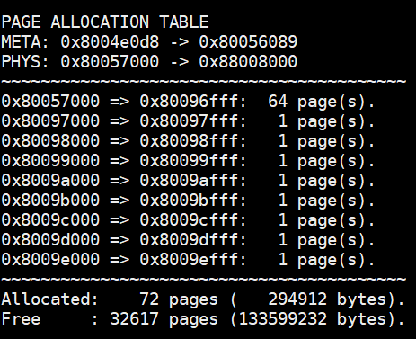

The Adventures of OS
使用Rust的RISC-V操作系统 在Patreon上支持我! 操作系统博客 RSS订阅 Github EECS网站 这是用Rust编写RISC-V操作系统系列教程中的第0章，介绍如何正确地构建运行环境。 目录 → （第0章） → 第1章
我需要你的支持
对我来说，写这些帖子现在只是业余消遣，因为我的本职工作是本科生教育。我会一直写下去，但真的很希望有人来帮助编写。如果你愿意，请在Patreon（sgmarz）支持我。 文章刚开始，要写的还有很多！所以，请加入我的团队吧!
环境配置与依赖安装
2019年9月27日
2020年更新
Rust现在对RISC-V的支持使我们能开箱即用！这使我们不通过工具链也能很容易地来构建项目。但工具链之外，你仍然需要QEMU（模拟器），在ch0.old.html的旧教程中有相关介绍。 同时还需要使用rustup命令安装一些依赖。如果你没有rustup，请在https://www.rust-lang.org/tools/install下载。
rustup default nightly
rustup target add riscv64gc-unknown-none-elf
cargo install cargo-binutils
由于我在系统中使用了语言特性（用**#![features]**表示），我们必须使用nightly版本，即使RISC-V是在稳定构建上。
构建与运行
在博客的git仓库中(Github)你会看到一个名为**.cargo/config**的文件。你可以根据你的系统来编辑这个文件：
[build]
target = "riscv64gc-unknown-none-elf"
rustflags = ['-Clink-arg=-Tsrc/lds/virt.lds']
[target.riscv64gc-unknown-none-elf]
runner = "qemu-system-riscv64 -machine virt -cpu rv64 -smp 4 -m 128M -drive if=none,format=raw,file=hdd.dsk,id=foo -device virtio-blk-device,scsi=off,drive=foo -nographic -serial mon:stdio -bios none -device virtio-rng-device -device virtio-gpu-device -device virtio-net-device -device virtio-tablet-device -device virtio-keyboard-device -kernel "
配置文件显示了我们要构建的目标，也就是riscv64gc。我们还需要指定我们的链接器脚本src/lds/virt.lds，以便我们能确保正确的文件位置。最后，当我们输入cargo run时，会调用一个 "runner"，它将运行riscv64 qemu。另外注意在-kernel后面有一个空格，这是因为cargo会自动指定通过Cargo.toml配置的可执行文件。
完成!
这部分确实很无聊，如果配置过程一切顺利（在ArchLinux上配置正常！），接下来的部分将有趣起来。
The Adventures of OS
使用Rust的RISC-V操作系统 在Patreon上支持我! 操作系统博客 RSS订阅 Github EECS网站 这是用Rust编写RISC-V操作系统系列教程中的第0章，介绍如何正确地构建运行环境。 目录 → （第0章） → 第1章
我需要你的支持
对我来说，写这些帖子现在只是业余消遣，因为我的本职工作是本科生教育。我会一直写下去，但真的很希望有人来帮助编写。如果你愿意，请在Patreon（sgmarz）支持我。 文章刚开始，要写的还有很多！所以，请加入我的团队吧!
掌握RISC-V
2019年9月27日
概述
启动并进入RISC-V系统是相当简单的。在各种方法中，我将要介绍我自己的方法--从物理内存地址0x8000_0000开始。幸运的是，QEMU可以读取ELF文件，所以它知道把我们的代码应该运行在哪个地址上。在整个过程中，我们将通过查看QEMU中包含的qemu/hw/riscv/virt.c源代码收集大量信息。首先，先来看一下内存映射：
static const struct MemmapEntry {
hwaddr base;
hwaddr size;
} virt_memmap[] = {
[VIRT_DEBUG] = { 0x0, 0x100 },
[VIRT_MROM] = { 0x1000, 0x11000 },
[VIRT_TEST] = { 0x100000, 0x1000 },
[VIRT_CLINT] = { 0x2000000, 0x10000 },
[VIRT_PLIC] = { 0xc000000, 0x4000000 },
[VIRT_UART0] = { 0x10000000, 0x100 },
[VIRT_VIRTIO] = { 0x10001000, 0x1000 },
[VIRT_DRAM] = { 0x80000000, 0x0 },
[VIRT_PCIE_MMIO] = { 0x40000000, 0x40000000 },
[VIRT_PCIE_PIO] = { 0x03000000, 0x00010000 },
[VIRT_PCIE_ECAM] = { 0x30000000, 0x10000000 },
};
由此可见，我们的机器从DRAM（VIRT_DRAM）的第0字节，地址0x8000_0000开始。当我们再往前走一点，我们将对CLINT（0x200_0000）、PLIC（0xc00_0000）、UART（0x1000_0000）和VIRTIO（0x1000_1000）编程。现在不要担心这些是什么意思，我们只需要看看接下来要做什么!
完成这些后，我们需要在RISC-V汇编中完成以下工作：
- 选择一个CPU引导加载程序（通常是id#0）；
- 将BSS部分清零；
- 开始Rust!
RISC-V汇编类似于MIPS汇编，除了我们不需要给我们的寄存器加前缀。所有的指令都来自于RISC-V规范，你可以在以下网站copy一份：https://github.com/riscv/riscv-isa-manual。我们的编写对象是RV64GC（RISC-V 64位，一般扩展和压缩指令扩展）。
选择一个引导加载程序
这个时候我们不去考虑并行性、条件竞争或其他任何与此相关的问题。相反，我们只让我们的一个CPU核心（RISC-V称为HARTs[硬件线程]）做所有的工作。我们现在首先要深入研究特权级规范，来弄清我们要讨论的是哪个寄存器。因此，请在https://github.com/riscv/riscv-isa-manual获取一份指导。 我们将从3.1.5章中开始（Hart ID寄存器 mhartid）。这个寄存器将告诉我们我们的hart编号。根据规范，我们必须有一个hart id #0。所以，我们以这个ID来启动。
在你的src/asm/目录下创建一个boot.S文件。我们将在此启动并进入Rust的编写。
# boot.S
# bootloader for SoS
# Stephen Marz
# 8 February 2019
.option norvc
.section .data
.section .text.init
.global _start
_start:
# Any hardware threads (hart) that are not bootstrapping
# need to wait for an IPI
csrr t0, mhartid
bnez t0, 3f
# SATP should be zero, but let's make sure
csrw satp, zero
.option push
.option norelax
la gp, _global_pointer
.option pop
3:
wfi
j 3b
在这里，csrr的意思是 "控制状态寄存器读取"，所以我们把我们的hart标识符读到寄存器t0中，检查它是否为零。如果不是，我们就把它送去停放（繁忙循环）。之后，我们将监督器地址转换和保护（satp）寄存器设置为0，这就是我们最终控制MMU的方式。由于我们还没有对虚拟内存的需求，我们通过把csrw（控制状态寄存器写入）写成0来禁用掉。一些板子的复位向量会将mhartid加载到该板子的a0寄存器中，但有些板子或许不会这么做，所以我选择从最可靠的地方来获取hart ID。
清除BSS
全局的、未初始化的变量的初值都是0，因为这些变量是在BSS段分配的。对于操作系统而言，我们要保证内存全是0幸运的是，在我们的链接器脚本中，有两个字段为我们定义，叫做_bss_start和_bss_end，分别告诉我们BSS部分的开始和结束位置。因此，我们在.option pop的下面和3的前面添加以下内容：
# The BSS section is expected to be zero
la a0, _bss_start
la a1, _bss_end
bgeu a0, a1, 2f
1:
sd zero, (a0)
addi a0, a0, 8
bltu a0, a1, 1b
2:
在这里，我们使用sd（双字[64位]存储）将0存到内存地址a0，该地址逐渐向_bss_end移动。
进入Rust编程
由于许多人都不喜欢编写大量的汇编，我们尽快跳入Rust，虽然也会有人认为用Rust编程是最难的部分。我们的Rust不会那么难，不会一直和借用检查器(borrow checker)较劲。
为了进入Rust程序并使CPU处于可预测的模式，我们将使用mret指令，这是一个陷阱返回函数。这允许我们将mstatus寄存器设置为我们的特权模式。因此，我们在boot.S中加入以下内容。
# Control registers, set the stack, mstatus, mepc,
# and mtvec to return to the main function.
# li t5, 0xffff;
# csrw medeleg, t5
# csrw mideleg, t5
la sp, _stack
# We use mret here so that the mstatus register
# is properly updated.
li t0, (0b11 << 11) | (1 << 7) | (1 << 3)
csrw mstatus, t0
la t1, kmain
csrw mepc, t1
la t2, asm_trap_vector
csrw mtvec, t2
li t3, (1 << 3) | (1 << 7) | (1 << 11)
csrw mie, t3
la ra, 4f
mret
4:
wfi
j 4b
这里有很多东西，有些被注释掉了。然而，我们要做的是将位[12:11]设置为11，也就是 "机器模式"。这将使我们能够访问所有的指令和寄存器。当然，我们可能已经处于这种模式了，但让我们再做一次。
> 那么位[7]和位[3]将在粗略的水平上启用中断。然而，我们仍然需要通过mie（机器中断使能）寄存器启用特定的中断，这一点我们在最后做。
mepc寄存器是 "机器异常程序计数器"，它是我们要返回的内存地址。符号kmain是在Rust中定义的，是我们离开汇编的逃生票。
mtvec（机器陷阱向量），是一个内核函数，每当有陷阱出现时就会被调用，比如系统调用、非法指令，甚至是定时器中断。
在我们完成Rust的主函数后，我们将ra（返回地址）设置为park。然后，mret指令将我们刚才所做的一切，通过mepc寄存器跳回，这就是我们最终进入Rust的地方!
(2019年9月29日添加）我们已经参考了asm_trap_vector，但我们还没有写。不过我们很快就会写，现在先在 src/asm/ 下创建一个名为 trap.S 的文件，并在其中添加以下内容。
# trap.S
# Assembly-level trap handler.
.section .text
.global asm_trap_vector
asm_trap_vector:
# We get here when the CPU is interrupted
# for any reason.
mret
裸机Rust的世界
现在我们已经来到了rust，我们需要编辑lib.rs，它是由cargo命令为我们创建的。不要改变 lib.rs 的名称，否则 cargo 将永远不知道我们在说什么。相反，lib.rs将是我们的入口点、实用工具，以及我们用来导入其他Rust模块的东西。不要把kmain看成是一个执行代码。相反，它将初始化我们所需要的一切，然后引起 "大爆炸"，也就是让一切都开始运动。操作系统主要是异步的。我们将使用一个定时器中断来催促我们的内核开始行动，所以我们不能使用我们可能习惯的单线程编程方法。
当你打开lib.rs时，删除里面的所有东西。里面没有我们需要的东西，也没有我们可以用于内核的东西。相反，根据Rust，我们需要定义一些东西。由于我们没有使用标准库（反正它不是为我们的内核建立的），我们必须在继续之前定义abort和panic_handler。所以，这里什么都没有。
#![allow(unused)] fn main() { // Steve Operating System // Stephen Marz // 21 Sep 2019 #![no_std] #![feature(panic_info_message,asm)] // /////////////////////////////////// // / RUST MACROS // /////////////////////////////////// #[macro_export] macro_rules! print { ($($args:tt)+) => ({ }); } #[macro_export] macro_rules! println { () => ({ print!("\r\n") }); ($fmt:expr) => ({ print!(concat!($fmt, "\r\n")) }); ($fmt:expr, $($args:tt)+) => ({ print!(concat!($fmt, "\r\n"), $($args)+) }); } // /////////////////////////////////// // / LANGUAGE STRUCTURES / FUNCTIONS // /////////////////////////////////// #[no_mangle] extern "C" fn eh_personality() {} #[panic_handler] fn panic(info: &core::panic::PanicInfo) -> ! { print!("Aborting: "); if let Some(p) = info.location() { println!( "line {}, file {}: {}", p.line(), p.file(), info.message().unwrap() ); } else { println!("no information available."); } abort(); } #[no_mangle] extern "C" fn abort() -> ! { loop { unsafe { // The asm! syntax has changed in Rust. // For the old, you can use llvm_asm!, but the // new syntax kicks ass--when we actually get to use it. asm!("wfi"); } } } }
我们使用#！[no_std]来告诉Rust，我们不会使用标准库。然后我们要求Rust允许我们的代码使用恐慌信息和内嵌式汇编功能。我们做的第一件事是创建一个空的eh_personality函数。#[no_mangle]关闭了Rust的名称处理功能，所以这个符号正好是eh_personality。然后，extern "C "告诉Rust使用C风格的ABI。
然后，#[panic_handler]告诉Rust，我们定义的下一个函数将是我们的panic处理程序。Rust调用panic有几个原因，我们将用我们的断言隐含地调用它。我让这个函数做的是打印出引起恐慌的源文件和行号。然而，我们还没有写print！或println!，但我们知道Rust中print和println的格式。顺便提一下，->！意味着这个函数不会返回。如果Rust检测到它可以返回，编译器会给你一个错误。
最后，我们写下中止函数。这所做的就是不断循环wfi（等待中断）指令。这使它正在运行的硬盘断电，直到另一个中断。
我们在生锈!
我们已经正式进入rust，所以我们需要写出我们在boot.S中指定的入口点，也就是kmain。所以，在我们的lib.rs代码中添加。
#![allow(unused)] fn main() { #[no_mangle] extern "C" fn kmain() { // Main should initialize all sub-systems and get // ready to start scheduling. The last thing this // should do is start the timer. } }
当kmain返回时，它碰到wfi循环并挂起。这是我们所期望的，因为我们还没有告诉内核要做什么。
所以，你有它。我们在Rust中。不幸的是，在我们写出print！的实际作用之前，我们不会看到任何打印到屏幕上的东西。但是，所有的东西都应该被编译出来通常情况下，好的作家会以一些引言或结束语来结束，但我不是一个好的作家。
当你输入make run时，你的操作系统将尝试启动并进入Rust，它会这样做的。然而，由于我们还没有编写与操作系统通信的驱动程序，所以什么也不会出现。输入CTRL-A，然后点击'x'退出模拟器。另外，你可以通过输入CTRL-A，然后点击'c'来查看你所在的位置。你现在是在QEMU的控制台。输入 "info registers "来查看模拟器在你的操作系统中的位置。
操作系统的历险记
使用Rust的RISC-V操作系统
在Patreon上支持我**!**操作系统 博客RSS****订阅 Github EECS****网站
这是关于用Rust编写RISC-V操作系统的多部分系列中的第二章。
通讯
2019年10月4日：仅有PATREON
2019年10月6日：公开
视频
带有评论的视频版本可以在以下网站找到：https://www.youtube.com/watch?v=1SR1sB8W248。
概述
在没有结果显示的情况下，我们编写的这个操作系统有什么好处？简短的回答是没有什么。我们已经孕育了这个男孩，并给它起了个名字，所以我们来谈谈吧！"。
我们将开始构建操作系统的各个部分，它们将像拼图一样，在以后的时间里组合在一起。有些会在相当早的时候就装配好（控制台和这个UART驱动密切配合），有些会在以后装配。请耐心等待，我们会成功的。
获取代码**!**
为了更容易跟上，请到https://github.com/sgmarz/osblog，抓住第二章的代码。
通用异步收发器**/**发射器（UART）
我们将首先使用UART（通用异步接收器/发射器）进行通信。我们通过QEMU使用的虚拟机模拟了NS16550A UART芯片组。我们使用内存映射的I/O在基础地址0x1000_0000处控制这个UART系统。在这里，我们可以控制NS16550a的寄存器，它们都是8位的。
内存映射的IO（MMIO）
基本上，我们要做的是设置一个指向地址0x1000_0000的指针。当我们写到这个地址或这个地址的某个偏移量时，我们实际上是在与UART设备而不是物理RAM对话。这是一个在嵌入式系统中众所周知的系统，称为MMIO或内存映射的输入和输出。
NS16550a****寄存器
寄存器只是位于硬件设备上的一点内存。对于NS16550a来说，这个内存是一个字节一个字节地访问的。例如，寄存器的布局如下（在 "寄存器图 "下），你可以看到发射器（THR）和接收器（RBR）寄存器都正好是8位（1字节）。当我从指向0x1000_0000的指针读取时，我从RBR中提取这8位。当我写到指向0x1000_0000的完全相同的指针时，我将会向THR发送。
这个MMIO系统很好，因为它不需要我们做任何特别的事情，除了从内存地址读取或写入。由于Rust支持原始指针，它使我们能够相当容易地控制硬件。在C++中，我们可以写下面的内容来读写发射器。
void mmio_write(unsigned long address, int offset, char value)
{
// We use volatile so that the optimizer on the
// compiler doesn't think we're writing a value for
// no reason.
volatile char *reg = (char *)address;
// To write, the pointer is on the left hand side of
// the assignment operator.
// Transmit the word 'A'
// (which is the 8-bit value 65 or 0b0100_0001)
*(reg + offset) = value;
}
char mmio_read(unsigned long address, int offset)
{
// We use volatile so that the optimizer on the
// compiler doesn't think we're writing a value for
// no reason.
volatile char *reg = (char *)address;
// To read, the pointer is dereferenced on a read.
// This reads from the receiver and returns the data.
return *(reg + offset);
}
带Rust的****MMIO
Rust确实有原始指针，但它没有volatile关键字。相反，我们将指针作为对象使用，并使用Rust的原始指针的write_volatile和read_volatile成员。比如说
#![allow(unused)] fn main() { /// # Safety /// /// We label the mmio function unsafe since /// we will be working with raw memory. Rust cannot /// make any guarantees when we do this. fn unsafe mmio_write(address: usize, offset: usize, value: u8) { // Set the pointer based off of the address let reg = address as *mut u8; // write_volatile is a member of the *mut raw // and we can use the .add() to give us another pointer // at an offset based on the original pointer's memory // address. NOTE: The add uses pointer arithmetic so it is // new_pointer = old_pointer + sizeof(pointer_type) * offset reg.add(offset).write_volatile(value); } /// # Safety /// /// We label the mmio function unsafe since /// we will be working with raw memory. Rust cannot /// make any guarantees when we do this. fn unsafe mmio_read(address: usize, offset: usize, value: u8) -> u8 { // Set the pointer based off of the address let reg = address as *mut u8; // read_volatile() is much like write_volatile() except it // will grab 8-bits from the pointer and give that value to us. // We don't add a semi-colon at the end here so that the value // is "returned". reg.add(offset).read_volatile() } }
如果你对add感到好奇，Rust提供了这个作为普通的ptr.offset的封装器，但是offset采取了一个isize，意味着它可以是正的或负的。为了清楚起见，我使用了基础寄存器中的.add()，但你可以选择你希望的任何一种。
我在mmio_read的评论中提到了不加分号的问题。Rust主要是一种 "表达式语言"，正如这里所记录的：https://doc.rust-lang.org/reference/statements-and-expressions.html。本质上，Rust会将函数分解为返回部分，对于这个函数来说，返回部分是一个u8（无符号8位整数）。当我们加上分号时，我们告诉Rust放弃求值的结果，并返回（）类型，Rust称之为单元类型（见https://doc.rust-lang.org/stable/rust-by-example/expression.html）。
登记表
NS16550a的寄存器如下。

这个寄存器图的重要部分是，发送器和接收器都在0x1000_0000。当我们向这个地址写8位时，它把这个字符放到发送器中。当我们从这个地址读出8位时，它从接收器中弹出一个字符。
在我们发送和接收之前，我们必须对UART控制器进行如下设置。
· 设置字长为8位（LCR[1:0]）。
· 启用FIFO（FCR[0]）。
· 启用接收器中断（IER[0]）。
设置字长为8位
字长描述了发送器和接收器的缓冲区一次可以包含多少位。之所以可以设置，是因为即使我们可以同时支持8位，但另一边的UART可能无法支持。然而，QEMU允许所有8位，所以这就是我们要做的。在线路控制寄存器（LCR）中，有两个位控制字的长度。根据技术规范，如果我们在这两个位上各写一个1，我们就会得到一个8位的字符长度。默认情况下，如果我们在每个槽中写0，我们得到一个5位的字长，这很奇怪。
启用****FIFO
FIFO通常被实现为一个硬件移位寄存器，允许一次存储多个字节。FIFO的缩写是先入先出。当数据被添加到FIFO中时，它保持相同的顺序，所以当我从同一个FIFO中读取时，我得到的是第一条输入的数据。这很好，因为当有人输入 "hello "时，我们一次读出一个字节，即h、e、l、l、o。
启用接收机中断
启用接收器中断意味着每当数据被添加到接收器中时，CPU就会通过中断得到通知。在本章中，我们将不实际处理中断，因为这需要我们对平台级中断控制器（PLIC）进行编程，我们将在后面进行。相反，在本章中，我们将对UART进行 "轮询"，看数据何时到达。
设置信令速率（BAUD）
由于这不是一个真正的UART（只是模拟的），我们实际上不需要设置除数来划分时钟以得到一个特定的波特率。然而，这样做的程序是将DLAB（除数锁存器访问位）设置为1。然后基址+0和基址+1现在分别是除数的下8位和上8位。然后，通过将DLAB位清除为0来关闭锁存器。
#![allow(unused)] fn main() { /// Initialize the UART driver by setting /// the word length, FIFOs, and interrupts pub fn uart_init(base_addr: usize) { let ptr = base_addr as *mut u8; unsafe { // First, set the word length, which // are bits 0, and 1 of the line control register (LCR) // which is at base_address + 3 // We can easily write the value 3 here or 0b11, but I'm // extending it so that it is clear we're setting two individual // fields // Word 0 Word 1 // ~~~~~~ ~~~~~~ let lcr = (1 << 0) | (1 << 1); ptr.add(3).write_volatile(lcr); // Now, enable the FIFO, which is bit index 0 of the FIFO // control register (FCR at offset 2). // Again, we can just write 1 here, but when we use left shift, // it's easier to see that we're trying to write bit index #0. ptr.add(2).write_volatile(1 << 0); // Enable receiver buffer interrupts, which is at bit index // 0 of the interrupt enable register (IER at offset 1). ptr.add(1).write_volatile(1 << 0); // If we cared about the divisor, the code below would set the divisor // from a global clock rate of 22.729 MHz (22,729,000 cycles per second) // to a signaling rate of 2400 (BAUD). We usually have much faster signalling // rates nowadays, but this demonstrates what the divisor actually does. // The formula given in the NS16500A specification for calculating the divisor // is: // divisor = ceil( (clock_hz) / (baud_sps x 16) ) // So, we substitute our values and get: // divisor = ceil( 22_729_000 / (2400 x 16) ) // divisor = ceil( 22_729_000 / 38_400 ) // divisor = ceil( 591.901 ) = 592 // The divisor register is two bytes (16 bits), so we need to split the value // 592 into two bytes. Typically, we would calculate this based on measuring // the clock rate, but again, for our purposes [qemu], this doesn't really do // anything. let divisor: u16 = 592; let divisor_least: u8 = divisor & 0xff; let divisor_most: u8 = divisor >> 8; // Notice that the divisor register DLL (divisor latch least) and DLM (divisor // latch most) have the same base address as the receiver/transmitter and the // interrupt enable register. To change what the base address points to, we // open the "divisor latch" by writing 1 into the Divisor Latch Access Bit // (DLAB), which is bit index 7 of the Line Control Register (LCR) which // is at base_address + 3. ptr.add(3).write_volatile(lcr | 1 << 7); // Now, base addresses 0 and 1 point to DLL and DLM, respectively. // Put the lower 8 bits of the divisor into DLL ptr.add(0).write_volatile(divisor_least); ptr.add(1).write_volatile(divisor_most); // Now that we've written the divisor, we never have to touch this again. In // hardware, this will divide the global clock (22.729 MHz) into one suitable // for 2,400 signals per second. So, to once again get access to the // RBR/THR/IER registers, we need to close the DLAB bit by clearing it to 0. ptr.add(3).write_volatile(lcr); } } }
首先，你可能会注意到，函数本身不再是不安全的了。相反，函数主体的各个部分是不安全的。当我们写一个不安全块时，我们是在告诉Rust "拿着我的啤酒"。如果函数被标记为不安全，比如unsafe fn uart_init，那么函数主体中的所有代码都可以是安全或不安全的。当我们给单个不安全块贴上标签时，只有在我们无法避免的情况下，我们才能进入不安全的Rust。
从UART读取数据
现在我们已经初始化了，现在只要有字符出现，我们就可以从UART读取。在未来，这种读取将由一个中断触发，我们可以读取数值并将其存入RAM中的一个缓冲区。
#![allow(unused)] fn main() { fn uart_get(base_addr: usize) -> Option { let ptr = base_addr as *mut u8; unsafe { // Bit index #5 is the Line Control Register. if ptr.add(5).read_volatile() & 1 == 0 { // The DR bit is 0, meaning no data None } else { // The DR bit is 1, meaning data! Some(ptr.add(0).read_volatile()) } } } }
写入 UART
同样地，我们也希望能够写到控制台。因此，让我们写uart_write。
#![allow(unused)] fn main() { fn uart_put(base_addr: usize, c: u8) { let ptr = base_addr as *mut u8; unsafe { // If we get here, the transmitter is empty, so transmit // our stuff! ptr.add(0).write_volatile(c); } } }
锈蚀
现在我们已经写好了uart函数，让我们创建一个uart模块。因此，首先创建一个名为 src/uart.rs 的文件。然后将uart_init、uart_get和uart_put函数移入其中。我们将使用被称为Rust "trait "的东西，这样我们就可以将我们的UART与任何想要写的东西联系起来......主要是>write！宏。
与C++不同，Rust的唯一结构性器具是结构体。Rust的结构可以有方法和成员变量，就像C++一样。所以，我们要把Uart驱动包装成一个名为Uart的结构。
#![allow(unused)] fn main() { pub struct Uart { base_address: usize, } }
我们正在存储UART的基本地址。有一些平台有多个UART!然而，现在我们要把它与core::fmt::Write trait联系起来。这使得我们可以在Rust中使用已经内置的宏write!要实现一个trait，我们需要使用 impl Write for Uart 语法，同时确保我们使用core::fmt::Write，以便将trait导入我们的uart.rs文件中。特质只是给出了一个保证，即某个（或某些）函数会存在。例如，下面的 write_str 是由 trait Write 要求的。这些行为非常像Java的接口或C++的抽象类。
#![allow(unused)] fn main() { // Rust allows us to import multiple traits or structures or other namespaces in one line by // using the braces { } as I've done here: use core::fmt::{Error, Write}; // This is the memory load of the structure. Unlike C++, we don't define the member functions // here. Instead, we'll use an impl block (implements or implementation). pub struct Uart { base_address: usize, } // Here's the implementation block. Notice that impl Uart simply implements member functions // in our already defined structure. impl Uart { pub fn new(base_address: usize) -> Self { Uart { // Since our parameter is also named the same as the member // variable, we can just label it by name. base_address } } } // This is a slightly different syntax. Write is this "trait", meaning it is much like // an interface where we're just guaranteeing a certain function signature. In the Write // trait, one is absolutely required to be implemented, which is write_str. There are other // functions, but they all rely on write_str(), so their default implementation is OK for now. impl Write for Uart { // The trait Write expects us to write the function write_str // which looks like: fn write_str(&mut self, s: &str) -> Result<(), Error> { for c in s.bytes() { self.put(c); } // Return that we succeeded. Ok(()) } } }
我们来写****println!
好的，所以println!()通常与stdout接口，但由于我们在写操作系统，我们没有这些花哨的功能。所以，我们要自己写。我们将用Rust的元编程语言来写，它是以代码macro_rules开始的。这种编程风格是我的第一个障碍，很难找到一个好的方法来教本科生这种元编程的复杂性，它本身就很像一种语言。
为了确保我们有一个全局宏，我把println写在lib.rs中，我把它称为 "主 "文件。也就是说，我们为操作系统编写的所有模块，如UART、调度、进程，都将是通过lib.rs文件连接的子模块。全局宏放在lib.rs的顶部，用以下代码启动。
#![allow(unused)] fn main() { // /////////////////////////////////// // / RUST MACROS // /////////////////////////////////// #[macro_export] macro_rules! print { ($($args:tt)+) => ({ use core::fmt::Write; let _ = write!(crate::uart::UartDriver::new(0x1000_0000), $($args)+); }); } #[macro_export] macro_rules! println { () => ({ print!("\r\n") }); ($fmt:expr) => ({ print!(concat!($fmt, "\r\n")) }); ($fmt:expr, $($args:tt)+) => ({ print!(concat!($fmt, "\r\n"), $($args)+) }); } }
在这段代码中，我同时指定了print和println，当我们使用它们的时候，它们将逐渐拥有自己的叹息点。println！所做的就是在我们要打印的东西的末尾添加一个换行。
那么，让我们来看看这个语法。我们指定#[macro_export]将我们的宏导出到其他的子模块中。这是#[macro_use]指令的阴阳两面，它告诉Rust，我们将使用一个crate（库）的宏。
现在，我们进入 "手臂"，也就是等号-大于号，在C#等语言中也被称为 "胖箭头"。但是，我自己也在和腰带的尺寸作斗争，我将坚持使用 "手臂 "的版本。在这里，我们要指定一个匹配模式。每当我们写下println!("Hello")这样的东西时，Rust就会尝试匹配我们指定的参数。所以，我使用美元符号"$"来指定一个元变量。在这里，我们告诉Rust，我们要把我们的参数标记为 "标记树"（tt）参数，这就是$args:tt的来源。加号'+'告诉Rust，这里会有一个或多个匹配，所以要想编译，必须至少指定这些标记树参数中的一个。否则，就是错误。
然后我们来到了手臂'=>'。在这里，我们要告诉Rust，如果我们匹配了这个臂膀，要代表我们 "编程 "什么。在这里，注意我通过简单地添加大括号{}添加了另一个范围。由于我们的UART驱动实现了Write特性，我们必须告诉Rust在调用 "write!"时要 "使用 "该特性。幸运的是，write！的功能已经为我们写好了！（感谢Rust开发者(谢谢Rust开发者）!
Rust试图成为一个好管家，告诉我们write！会返回一些东西。我们用let 来告诉Rust，我们知道这一点，但我们并不关心。下划线''本质上是承认了返回，但还是要抛弃它。在write!里面，我指定了一个长的路径来获取我们的uart驱动crate::uart::UartDriver。基本上，crate指定了根，从那里我们添加了一个名为uart的模块（见下面的代码），在该模块中，我们有一个名为UartDriver的结构，它实现了一个名为new的静态函数。
最后，我们要告诉Rust将每个参数扩展到write！宏的末尾，这样所有的参数（记住：一个或多个）都直接传递给write宏。
对于println，我使用了expr，意思是 "表达式"，以表明一个只是另一个的更严格版本。这篇博客并不打算成为一个编译器教程，所以我打算把它作为 "未来 "的工作来做--欢迎来到学术界相反，我只想告诉你，Rust会努力地匹配我们给println和print的内容。
为什么println有3个臂膀？
与print不同，我们希望能够调用println!();，而只是打印一个换行符。如果我们对print!这样做，那就太愚蠢了，因为它什么都不会做。这就是为什么在print中，我们指定了加号'+'，这样我们就可以匹配一个或多个。为了匹配零或更多，我们会使用星号'*'。
第二个臂膀有$fmt:expr，如果我们提供至少一个参数，Rust就会匹配它。在本例中，这是一个格式字符串--类似于 "Hello {}"。请注意，Rust更多地使用了C#的风格（或者C#使用了Rust的风格--你们自己争论吧！），而不是C风格的%d、%s等。关于格式化的整个讨论可以在这里找到：https://doc.rust-lang.org/std/fmt/index.html。
第三个臂膀将格式字符串和需要被替换到格式字符串中的参数结合起来。
为什么每次都要创建一个新的UartDriver？
这篇文章已经变得相当长了，但是我们将使用 "单子 "模式，这样外面就只有一个UartDriver存在。然而，由于内存位置总是相同的，我在这里的方法是简单地将该内存地址包裹到一个UartDriver结构中。TL;DR: 我们会成功的!
将UART加载到lib.rs中
我使用我的lib.rs作为我的 "守护者"。它包含了一些代码，但它的工作是导入其他模块，并给我们一个路径来获取它们，就像我们在打印宏中写的crate::uart::UartDriver一样。所以，Rust不使用include预处理器指令，比如C++的#include。相反，我们通过指定mod uart来导入模块。我在我的模块前面加了pub，使它们成为公共模块。这很像Rust将所有变量默认为不可变的。可见性也是如此，有一个pub关键字可以使一个本来是私有的模块变成公共的。
所以，现在我们的代码看起来是这样的。
#![allow(unused)] #![no_std] #![feature(panic_info_message,asm)] fn main() { // /////////////////////////////////// // / RUST MACROS // /////////////////////////////////// #[macro_export] macro_rules! print { ($($args:tt)+) => ({ use core::fmt::Write; let _ = write!(crate::uart::UartDriver::new(0x1000_0000), $($args)+); }); } #[macro_export] macro_rules! println { () => ({ print!("\r\n") }); ($fmt:expr) => ({ print!(concat!($fmt, "\r\n")) }); ($fmt:expr, $($args:tt)+) => ({ print!(concat!($fmt, "\r\n"), $($args)+) }); } // /////////////////////////////////// // / LANGUAGE STRUCTURES / FUNCTIONS // /////////////////////////////////// #[no_mangle] extern "C" fn eh_personality() {} #[panic_handler] fn panic(info: &core::panic::PanicInfo) -> ! { print!("Aborting: "); if let Some(p) = info.location() { println!( "line {}, file {}: {}", p.line(), p.file(), info.message().unwrap() ); } else { println!("no information available."); } abort(); } #[no_mangle] extern "C" fn abort() -> ! { loop { unsafe { asm!("wfi"::::"volatile"); } } } // /////////////////////////////////// // / ENTRY POINT // /////////////////////////////////// #[no_mangle] extern "C" fn kmain() { // I don't need to add crate in front here because we're in the root // module (lib.rs). // However, we had to add crate:: for the print! macro since that metaprogrammed // macro will expand into other, non root modules, where the crate:: will be // necessary. // Remember, the default base address is 0x1000_0000. let mut my_uart = uart::UartDriver::new(0x1000_0000); my_uart.init(); println!("This is my operating system!"); println!("I'm so awesome. If you start typing something, I'll show you what you typed!"); // Our goal is to repeat, or echo, what the user types to us. This is just for testing! } // /////////////////////////////////// // / RUST MODULES // /////////////////////////////////// pub mod uart; }
我继续前进，并预设了println!()（去<在此插入你的团队名称>），期望一切都能成功。在我的生活中，总有那么一刻，当我运行make时，我屏住呼吸，只等着一连串的错误来告诉我，我是一个多么糟糕的程序员。
有了这个，pub mod uart将在与我们的lib.rs相同的目录下寻找一个叫uart.rs的文件。稍后，我们将创建目录并使用mod.rs。如果你知道我在说什么，我们很快就能达到目的了!如果你不知道，别担心，我们以后会到的。(是的，我说了两件相互矛盾的事情）。
由于这种导入是Rust的行为，而且我们写了uart.rs，所以我们应该有良好的精神状态。
说话，我的孩子
让我们看看是否能让我们的孩子（操作系统）对我们说话。假设我们正确地写了write_str，而且我们没有忘记先初始化UART，我们应该看到一些字。我一开始忘了，但我可以编辑我的帖子--谁能告诉我呢，对吗？

所以，运行make run，让孩子说话吧!如果你什么都得不到，请看一下我的第二章的Git Repo，网址是：https://github.com/sgmarz/osblog。
听着，我的孩子
现在我们知道我们的孩子可以说话，让我们看看我们的孩子是否可以听。请记住，write_str，它是Write特性的一部分，调用我们的uart_put函数，逐个字符（严格地说，u8逐个u8）。自从UTF以来，一个字符已经被私生子化了。
我们最终会把这段代码移到带有缓冲区的控制台处理程序中，这样我们就可以抓取整个字符串，而不仅仅是字符，但这里什么都没有。
#![allow(unused)] fn main() { let mut my_uart = uart::UartDriver::new(0x1000_0000); my_uart.init(); println!("This is my operating system!"); println!("I'm so awesome. If you start typing something, I'll show you what you typed!"); // Now see if we can read stuff: // Usually we can use #[test] modules in Rust, but it would convolute the // task at hand. So, we'll just add testing snippets. loop { if let Some(c) = my_uart.get() { match c { 8 => { // This is a backspace, so we essentially have // to write a space and backup again: print!("{}{}{}", 8 as char, ' ', 8 as char); }, 10 | 13 => { // Newline or carriage-return println!(); }, _ => { print!("{}", c as char); } } } } }
Rust有一个循环，它无条件地以最快的速度进行循环。我们应该添加一些刹车，但现在，让我们以最快的速度读取字符。大多数非Rust程序员首先会看到的新语法是if let Some(c)的东西。记住my_uart.get()返回一个Option，它要么是Some，要么是None。
使用 if let，我们可以从期权中提取标的物的价值，并同时查看期权是否为 Some。在上面的例子中，if let只在my_uart.get()返回Some时执行其主体。请记住，我们还将从UART中弹出的字符包装到这个Some()结构中（确切地说，是枚举）。因此，这个块里面的代码意味着一个叫做c的新变量包含了被Some包装的字符。很好，对吗？
第二个语言结构是匹配语句。它类似于switch语句，但没有混乱的中断。在这种情况下，Rust将检查变量c的内容，然后我们指定某些情况，如果c与之匹配。在上面的代码中，我们对c匹配8和10或13时有特殊的代码。|（管道字符）允许我们为一个手臂指定多个情况。同样，就像print和println中的宏匹配一样，我们使用胖箭头来扩展手臂。
案例8是退格的数字代码。然而，退格的真正含义是 "将光标向左移动一个字符"。所以，如果我们只是打印，光标会移动，但底层的文本仍然在那里。因此，我们的解决方案是移动光标，画一个空格（这将使光标向右移动一个空格），然后再将光标向左移动一个空格。
案例10是'\n'（换行）字符，案例13是'\r'（回车）字符。根据你的终端和终端仿真，你可能会得到一个或另一个或两者。我们所做的就是调用println!()，这将使Rust匹配第一个臂（没有任何表达式或标记树的那个）。回顾那里的代码，我们看到这将只是打印一个换行。
#![allow(unused)] fn main() { // This is println!s arm if no parameters are specified. () => ({ print!("\r\n") }); }
最后，下划线被用来捕获其他所有的东西--有点像 "非上述 "选项。它很像开关语句的默认情况。任何我们不能用上面的武器匹配的东西都可以在这里匹配。Rust强迫我们为每一种可能性都准备一个案例，因此，我们要么指定256种可能性（0-255），要么指定几种可能性，然后再指定一个万能的。我选择了后者。
附注：如果只有一行代码，Rust并不要求我们为每个匹配臂添加括号。然而，由于我们将在这段代码的大部分基础上进行开发，我为 "未来的扩展 "加上了大括号。
测试**!**
让我们看看这是否有效。

最后的安慰**--**事情
许多人不记得ANSI转义序列了，因为我们现在有GUI。然而，每当你按下扩展键，如方向键时，这些将被传递给你的UART系统。现在，方向键只是在屏幕上移动光标，因为我们打印出准确的字节序列。
ANSI转义序列是多个字节，以字节0x1b（十进制27）开始。下一个字节是0x5b（十进制91），是左括号字符'['。然后剩下的是序列的参数。我们要捕捉上、下、左、右箭头的序列。所以，在你的匹配臂上添加以下内容。
#![allow(unused)] fn main() { 0x1b => { // Those familiar with ANSI escape sequences // knows that this is one of them. The next // thing we should get is the left bracket [ // These are multi-byte sequences, so we can take // a chance and get from UART ourselves. // Later, we'll button this up. if Some(next_byte) = my_uart.get() { if next_byte == 91 { // This is a right bracket! We're on our way! if let Some(b) = my_uart.get() { match b as char { 'A' => { println!("That's the up arrow!"); }, 'B' => { println!("That's the down arrow!"); }, 'C' => { println!("That's the right arrow!"); }, 'D' => { println!("That's the left arrow!"); }, _ => { println!("That's something else....."); } } } } } }, }
现在，再次运行你的操作系统，但这一次，试试箭头！这将有助于我们编写我们的shell。这在我们编写shell时将会很有帮助。

如果你用箭头太快，有时你会看到A、B、C或D出现。这是因为你会匹配转义序列，但错过了第91字节。因此，你的循环看起来只是一个普通的A、B、C或D，甚至是左括号'['。

哇，这个代码很脏
是的，你见过房子的施工吗？你现在看到的是我们在操作系统中铺设的脚手架。这种简单但肮脏的通信方式使我们能够收紧我们即将为操作系统的下一个部分建立的代码。这样做的好处是我们可以用很少的代码进行通信。当我们把更多的Rust语言结构放在UART驱动周围时，每个操作可能看起来就不那么明显了。
现在，我们只想进行通信。我们从婴儿谈话开始，然后我们可以开始将UART集成到一个控制台模块中，该模块将支持更多类似终端的功能。记住，让它工作、玩耍、欢呼、啤酒（这是一个动词，对吗？），然后我们就可以开始清理代码了。我预计还有很多章节会是这样的。我们将探索已经被广泛研究的内存分配器，我们将挑选一个，看看它是否适合我们，如果不适合，再挑选另一个。我认为这更像是一个旅程，而不是 "这是最终产品，享受吧！"已经有一个最终产品了--如果这是你唯一的目标，就叫RISC-V的Linux。
沟通是关键
使用调试器是一个很大的挑战，尤其是当你不熟悉如何使用调试器或你所使用的特定调试器时。相反，我教我的那些从来没有编程的学生以一定的增量打印出数值，看看他们是否得到他们认为应该得到的东西。你现在可以倾听你的操作系统，与它对话。你可以开始自己做实验，看看你能让它做什么很酷的事情。还有，用Rust做实验。我绝不是一个专家，正如许多Rust开发者在我的GitHub上所证明的那样--尽管我欢迎教育（我真的很欢迎！）。所以，也许你能找到比我使用Rust更整洁、更好的方法。如果是这样，请告诉我们。
页粒度的内存分配
视频
本章博文的视频在 YouTube 上：https://www.youtube.com/watch?v=SZ6GMxLkbx0。
概述
当我们启动时，.elf 文件内的所有内容都会自动加载到内存中。在代码中可见，我们为整个系统分配了 128 兆字节空间。因此，我们需要处理除去所有声明的全局变量和代码之外的空间。
在管理内存时，我们本质上需要处理三个部分：1）页粒度的分配，2）字节粒度的分配，以及 3）内存管理单元的编程。
以页为单位的分配
以页为单位的分配意味着每一次分配所提供的内存大小是一个页。在大多数架构中，最小的页大小是 4096 字节。RISC-V 也不例外。我们将使用 SV39 MMU 分页系统，这些将在第 3 部分中深入讨论。
我们有多种方法可以一次分配页面。由于我们知道每一次分配的大小，分配方案就很直白了。许多操作系统使用一个链表进行分配，其中指向链表头部的指针是第一个未分配的页面，然后每个未分配的页面用 8 个字节来存储下一个指针，指向下一个页面的内存地址。这些字节是存储在页面本身之中的，所以不需要额外的内存的开销。
这个系统的缺点是，我们必须跟踪每一个被分配的页面，因为一个指针就是一个页面。
#![allow(unused)] fn main() { struct FreePages { struct FreePages *next; }; }
描述符的分配
我们的操作系统将使用描述符。我们可以分配连续的页面，而只存储链表头的指针。然而要做到这一点，我们需要为每个 4096 字节大小的页额外分配一个字节。这一个字节将包含两个标志：1）这个页面是否被占用？ 2）这是不是连续分配的最后一个页面？
#![allow(unused)] fn main() { // These are the page flags, we represent this // as a u8, since the Page stores this flag. #[repr(u8)] pub enum PageBits { Empty = 0, Taken = 1 << 0, Last = 1 << 1, } pub struct Page { flags: u8, } }
在这里，我们需要为每个页面分配一个 Page 结构体。幸运的是，通过升级过的链接器脚本，我们能够获得堆的地址和大小。
/*
Finally, our heap starts right after the kernel stack. This heap will be used mainly
to dole out memory for user-space applications. However, in some circumstances, it will
be used for kernel memory as well.
We don't align here because we let the kernel determine how it wants to do this.
*/
PROVIDE(_heap_start = _stack_end);
PROVIDE(_heap_size = _memory_end - _heap_start);
我们可以简单的地计算出堆中的总页数：let num_pages = HEAP_SIZE / PAGE_SIZE;，其中 HEAP_SIZE 是一个全局符号，值为 _heap_size，页大小是一个常数为 4096。最终我们必须分配 num_pages 数量的 Page 描述符来存储分配信息。
页面分配
分配是通过首先在描述符链表中搜索一个连续、空闲的页面块来完成的。我们接收想要分配的页数量作为 alloc 的参数。如果我们找到一段空闲的页，我们就把所有这些 Page 的描述符都设置为已占用，然后将最后一个页的"Last"位置位。这可以帮助我们在释放分配的页面时，跟踪最后一个页面的位置。
#![allow(unused)] fn main() { pub fn alloc(pages: usize) -> *mut u8 { // We have to find a contiguous allocation of pages assert!(pages > 0); unsafe { // We create a Page structure for each page on the heap. We // actually might have more since HEAP_SIZE moves and so does // the size of our structure, but we'll only waste a few bytes. let num_pages = HEAP_SIZE / PAGE_SIZE; let ptr = HEAP_START as *mut Page; for i in 0..num_pages - pages { let mut found = false; // Check to see if this Page is free. If so, we have our // first candidate memory address. if (*ptr.add(i)).is_free() { // It was FREE! Yay! found = true; for j in i..i + pages { // Now check to see if we have a // contiguous allocation for all of the // request pages. If not, we should // check somewhere else. if (*ptr.add(j)).is_taken() { found = false; break; } } } // ........................................ }
我们可以简单算出哪个描述符指向哪个页面，因为第一个描述符就是第一页，第二个描述符是第二页，...，第 n 个描述符是第 n 页。这种一对一的关系简化了数学运算：ALLOC_START + PAGE_SIZE * i 。在这个公式中，ALLOC_START 是第一个可用页面的地址，PAGE_SIZE 是常数 4096，而 i 是指第 i 个页面描述符（从0开始）。
页面释放
首先我们必须把上面的等式倒过来，计算出这个页面对应的是哪个描述符。我们可以使用这个式子：HEAP_START + (ptr - ALLOC_START) / PAGE_SIZE。我们接收一个指向可使用页面的指针 ptr。我们从该指针中减去可使用的堆顶部地址，以获得该 ptr 的绝对位置。由于每次分配都正好是 4096 字节，我们再除去页面大小来得到描述符下标。然后我们再加上 HEAP_START 变量，这样就得到了描述符的位置。
#![allow(unused)] fn main() { pub fn dealloc(ptr: *mut u8) { // Make sure we don't try to free a null pointer. assert!(!ptr.is_null()); unsafe { let addr = HEAP_START + (ptr as usize - ALLOC_START) / PAGE_SIZE; // Make sure that the address makes sense. The address we // calculate here is the page structure, not the HEAP address! assert!(addr >= HEAP_START && addr < HEAP_START + HEAP_SIZE); let mut p = addr as *mut Page; // Keep clearing pages until we hit the last page. while (*p).is_taken() && !(*p).is_last() { (*p).clear(); p = p.add(1); } // If the following assertion fails, it is most likely // caused by a double-free. assert!( (*p).is_last() == true, "Possible double-free detected! (Not taken found \ before last)" ); // If we get here, we've taken care of all previous pages and // we are on the last page. (*p).clear(); } } }
在这段代码中，我们可以看到，我们一直释放空间直到最后一个被分配的页。如果我们在到最后一个分配的页面之前遇到了一个没有被占用的页面，那么我们的堆就乱套了。通常情况下，当一个指针被释放超过一次时就会发生这种情况（常称为双重释放）。在这种情况下我们可以添加一个 assert! 语句来帮助捕捉这些类型的问题，但我们必须使用“可能”一词，因为我们不能确定为什么在出现非占用页之前没有遇到最后一个被分配的页。
分配清零的页面
这些 4096 字节的页将分配给内核和用户应用使用。注意当我们释放一个页面时，我们并不清除内存内容，相反我们只清除描述符。在上述代码中这表现为 (*p).clear()。这段代码只清除了描述符对应的位，而不是整个页的 4096 字节。
安全起见，我们将创建一个辅助函数，分配并清除这些页面。
#![allow(unused)] fn main() { /// Allocate and zero a page or multiple pages /// pages: the number of pages to allocate /// Each page is PAGE_SIZE which is calculated as 1 << PAGE_ORDER /// On RISC-V, this typically will be 4,096 bytes. pub fn zalloc(pages: usize) -> *mut u8 { // Allocate and zero a page. // First, let's get the allocation let ret = alloc(pages); if !ret.is_null() { let size = (PAGE_SIZE * pages) / 8; let big_ptr = ret as *mut u64; for i in 0..size { // We use big_ptr so that we can force an // sd (store doubleword) instruction rather than // the sb. This means 8x fewer stores than before. // Typically we have to be concerned about remaining // bytes, but fortunately 4096 % 8 = 0, so we // won't have any remaining bytes. unsafe { (*big_ptr.add(i)) = 0; } } } } }
我们简单地调用 alloc 来完成那些繁重的工作——分配页面描述符并设置标志位。然后我们进入 zalloc 的后半部分，即将页面清零。幸运的是，我们可以使用 8 字节的指针来一次性存储 8 字节的 0 ，因为 4096 / 8 = 512，而 512 是一个整数。因此，8 字节的指针只需 512 轮循环即可完全覆盖一个 4096 字节的页面。
测试
我创建了一个函数，通过查看所有占用的描述符来打印出页分配表。
#![allow(unused)] fn main() { /// Print all page allocations /// This is mainly used for debugging. pub fn print_page_allocations() { unsafe { let num_pages = HEAP_SIZE / PAGE_SIZE; let mut beg = HEAP_START as *const Page; let end = beg.add(num_pages); let alloc_beg = ALLOC_START; let alloc_end = ALLOC_START + num_pages * PAGE_SIZE; println!(); println!( "PAGE ALLOCATION TABLE\nMETA: {:p} -> {:p}\nPHYS: \ 0x{:x} -> 0x{:x}", beg, end, alloc_beg, alloc_end ); println!("~~~~~~~~~~~~~~~~~~~~~~~~~~~~~~~~~~~~~~~~~"); let mut num = 0; while beg < end { if (*beg).is_taken() { let start = beg as usize; let memaddr = ALLOC_START + (start - HEAP_START) * PAGE_SIZE; print!("0x{:x} => ", memaddr); loop { num += 1; if (*beg).is_last() { let end = beg as usize; let memaddr = ALLOC_START + (end - HEAP_START) * PAGE_SIZE + PAGE_SIZE - 1; print!( "0x{:x}: {:>3} page(s)", memaddr, (end - start + 1) ); println!("."); break; } beg = beg.add(1); } } beg = beg.add(1); } println!("~~~~~~~~~~~~~~~~~~~~~~~~~~~~~~~~~~~~~~~~~"); println!( "Allocated: {:>6} pages ({:>10} bytes).", num, num * PAGE_SIZE ); println!( "Free : {:>6} pages ({:>10} bytes).", num_pages - num, (num_pages - num) * PAGE_SIZE ); println!(); } } }
然后，让我们来分配一些页面! 我已经分配了一些单页和一段较大的 64 页空间。你会看到以下打印出的内容。

未来
对于较小的数据结构，页粒度的分配器会浪费大量的内存。例如，一个存储整数的链表结点将需要 4 字节 + 8 字节 = 12 字节的内存。4 字节用于整数，8 字节用于下一个指针。然而我们必须动态分配一整页。因此，我们有可能浪费 4096 - 12 = 4084 字节。所以，我们可以做的是更精细管理每个页面的分配，这个以字节为单位的分配器将很像 C++ 中 malloc 的实现方式。
当我们开始分配用户空间的进程时，我们需要保护内核内存不被用户的应用程序错误地写入，因此我们将使用内存管理单元，特别地，我们将使用Sv39 方案，它的文档在 RISC-V 特权规范第 4.4章中。
本章还将关注两个部分：2）内存管理单元（MMU）和 3）Rust 中 alloc crate 的字节粒度内存分配器，它包含数据结构，如链表和二叉树。我们还可以使用这个 crate 来存储和创建 String 类型。
内存管理单元
视频
本章博文的视频在 YouTube 上：https://www.youtube.com/watch?v=-9sRy5UPWJk
概述
从操作系统的角度来看，我们有一个从某个起始地址到某个结束地址的大内存池。我们可以使用链接脚本（virt.lds 文件）提供表示起始和终止地址的符号。
一些内存将用于全局变量、堆栈空间等。但是，我们使用链接脚本来帮助我们处理这些不断移动的东西。其余空闲的内存成为我们的“堆”空间。然而，操作系统中的堆并不完全是 malloc/free 所使用的堆。
分页
分页是一个通过硬件（通常称为内存管理单元或 MMU）将虚拟地址翻译为物理地址的系统。MMU 通过读取名为 SATP（Supervisor Address Translation and Protection）的特权寄存器来执行地址翻译。该寄存器控制 MMU 的使能，设置地址空间标识符，并设置第一级页表所在的物理内存地址。
我们可以将这些表放在 RAM 中的任何位置，只要地址最后 12 位为 0。这是因为 SATP 中没有提供页表的最后 12 位。事实上，为了获得实际的内存地址，我们从 SATP 中取出 44 位并将其左移 12 位，同时在低 12 位填充 0。这组成了一个 56 位的地址——而不是 64 位。
本质上我们只需要关注以下三点：(1) 虚拟地址，(2) 物理地址，以及 (3) 页表项。这些都列在 RISC-V 特权规范第 4.4章中。
RISC-V 有不同的分页模式。HiFive Unleashed 使用 Sv39 模式，这意味着虚拟地址为 39 位。在这种情况下，虚拟地址无法使用完整的 64 位内存空间。其他的分页模式包括使用 32 位虚拟地址的 Sv32 和使用 48 位虚拟地址的 Sv48。
虚拟地址
Sv39 虚拟地址包含三个 9 位索引。由于 \( 2^9 = 512 \)，每级页表都包含 512 个页表项，每个页表项正好是 8 字节（64 位），如下所示。 Sv39 虚拟地址包含 VPN[x]。 VPN 代表“虚拟页号”，它本质上是一个包含 512 个 8 字节条目的数组的索引。因此，MMU 不是直接将虚拟地址转换为物理地址，而是通过一系列页表。使用 Sv39 系统，我们的页表可以三个级别，每个级别是一张包含 512 个 8 字节项的表。

页表项
操作系统会写入一个页表项来控制 MMU 的工作方式。我们可以更改地址的翻译方式，也可以设置某些位来保护页面。页面入口如下图所示：

物理地址
物理地址实际上是 56 位。因此，一个 39 位的虚拟地址可以转换为一个 56 位的物理地址。显然，这允许我们将相同的虚拟地址映射到不同的物理地址——就像我们在创建用户进程时映射地址的方式一样。物理地址是通过获取 PPN[2:0] 并将它们按照以下格式拼接来形成的。可以注意到页面偏移量是直接从虚拟地址复制到物理地址的。

SATP 寄存器
所有的地址翻译都从如下所示的SATP寄存器开始，具体描述在 RISC-V 特权规范第 4.1.12 章中。SATP 寄存器的示意图如下。

我们可以看到 PPN（物理页号）是一个 44 位的值。但是，该值在存储之前已右移 12 位，这本质上是将实际地址除以 4096 (\( 2^12 = 4096 \))。因此，实际地址为 PPN << 12。
页面错误
MMU 通过三个不同的分页错误向 CPU 发出地址翻译错误信号：(1) 指令、(2) 加载和 (3) 存储。当 MMU 引发页面错误时，在取指阶段发生指令分页错误。这可能意味着页表项无效或没有将 X（执行）位设置为 1 或其他原因。
页面错误由 CPU 捕获， mcause 或 scause 寄存器中存有异常编号。 12 表示指令页面错误、13 表示加载页面错误、 15 表示存储页面错误。操作系统可以决定如何处理。在大多数情况下，正确的处理方式是杀死有问题的进程。但是，有一些高级的系统机制，例如写时复制（Copy-on-Write, CoW），是通过捕获页面错误来实现的。在这些情况下，页面错误不是一个问题，而是一个特性。
虚拟地址翻译
举个例子。虚拟地址 0x7d_beef_cafe ，正好是 39 位。如果地址长于 39 位， MMU 很可能会产生一个页面错误。
二进制：0b0111_1101_1011_1110_1110_1111_1100_1010_1111_1110
| VPN[2] | VPN[1] | VPN[0] | 12 位偏移 |
|---|---|---|---|
| [1_1111_0110] | [1_1111_0111] | [0_1111_1100] | [1010_1111_1110] |
| 502 | 503 | 252 |
上面的地址将按照以下步骤进行翻译：
- 读取 SATP 寄存器并找到第 2 级页表的首项地址 (
PPN << 12)。 - 在首项地址上加上偏移量*大小，其中偏移量为
VPN[2] = 0b1_1111_0110 = 502 * 8 = SATP + 4016 - 读取此条目。
- 如果 V(valid)=0，产生页面错误
- 如果该条目的 R、W 或 X 位为 1，则该页表项为叶项，否则为枝干项。
- PPN [2] | PPN[1] | PPN[0] 地址指示下一个页表在物理内存中的位置。
- 从第 2 步重复，直到找到叶项。
- 叶项表示 PPN[2]、PPN[1] 和 PPN[0] 告诉 MMU 实际物理地址是什么。
每一级页表都可以成为叶项
像大多数内存管理单元一样，MMU 可以翻译更粗粒度的页面。例如，Intel/AMD x86_64 系统可以在 PDP 处停止，这可以提供 1GB 的粒度，而在 PD 处停止将提供 2MB 的粒度。这同样适用于 RISC-V 系统。不过，RISC-V 采用了一种巧妙的方法来区分叶项和枝干项。
在 Intel/AMD 机器上，上级页表控制下级页表。如果某个上级页表是只读的，那么之后的任何枝干项都不可写。 RISC-V 认为这很愚蠢，所以他们的设计是这样的：如果 R、W、X（读、写、执行）保护位中的任何一个被置位，则该页表项是一个页项。
如果一个页表项 (PTE) 是叶子，则 PPN[2:0] 表示物理地址。但是，如果一个 PTE 是枝干项，则 PPN[2:0] 描述可以在物理 RAM 中找到下一个页表的位置。需要注意的一点是，只有 PPN[2:leaf-level] 将用于开发物理地址。例如，如果第 2 级（顶层）的页表条目是叶子，那么只有 PPN[2] 对物理地址有贡献。 VPN[1] 被复制到 PPN[1]，VPN[0] 被复制到 PPN[0]，并且页偏移被复制，正常。
对MMU的编程
在 Rust 中，我创建了三个对 MMU 进行编程的函数： map 、 unmap 和 virt_to_phys 。我们需要能够手动遍历页表，因为当用户空间的应用程序进行系统调用时，每个指针都是指向虚拟内存地址的指针--这与我们在内核中的地址不一样。因此，我们必须一路深入到一个物理地址，以使用户空间应用程序和内核使用的是同一个内存地址。
我使用了一些结构体来简化页表项的编程。
#![allow(unused)] fn main() { pub struct Table { pub entries: [Entry; 512], } impl Table { pub fn len() -> usize { 512 } } }
第一个结构体是 Table 。它描述了一级 4096 字节的页表。这个大小来自 512 个 8 字节的页表项。一个页表项被描述为：
#![allow(unused)] fn main() { pub struct Entry { pub entry: i64, } impl Entry { pub fn is_valid(&self) -> bool { self.get_entry() & EntryBits::Valid.val() != 0 } // 首位 (下标 #0) 是有效位 (Valid, V) pub fn is_invalid(&self) -> bool { !self.is_valid() } // 页项的 RWX 位至少有一位被置位 pub fn is_leaf(&self) -> bool { self.get_entry() & 0xe != 0 } pub fn is_branch(&self) -> bool { !self.is_leaf() } pub fn set_entry(&mut self, entry: i64) { self.entry = entry; } pub fn get_entry(&self) -> i64 { self.entry } } }
本质上我只是把 i64 数据类型重命名为 Entry，这样我就可以给它添加一些辅助函数。
map 函数接收一个页表根的可变引用，一个虚拟地址，一个物理地址，保护位，以及这个地址应该被映射到哪个级别。通常情况下，我们将所有的页面映射到 0 级，也就是 4KiB 级。然而，我们可以用 2 级表示比 1GiB 页，1 表示 2MiB 页，或 0 表示 4KiB 页。
#![allow(unused)] fn main() { pub fn map(root: &mut Table, vaddr: usize, paddr: usize, bits: i64, level: usize) { // 确保 RWX 至少有一位被置位，否则会导致内存泄漏并且产生一个页错误 assert!(bits & 0xe != 0); // 从虚拟地址中提取 VPN 。虚拟地址中, 每段 VPN 都恰好是 9 位， // 所以我们用 0x1ff = 0b1_1111_1111 (9 位) 作为掩码 let vpn = [ // VPN[0] = vaddr[20:12] (vaddr >> 12) & 0x1ff, // VPN[1] = vaddr[29:21] (vaddr >> 21) & 0x1ff, // VPN[2] = vaddr[38:30] (vaddr >> 30) & 0x1ff, ]; // 与虚拟地址类似，提取物理页号 (PPN)。但是 PPN[2] 是 26 位而不是 9 位， // 这是不同之处。因此我们使用 // 0x3ff_ffff = 0b11_1111_1111_1111_1111_1111_1111 (26 位). let ppn = [ // PPN[0] = paddr[20:12] (paddr >> 12) & 0x1ff, // PPN[1] = paddr[29:21] (paddr >> 21) & 0x1ff, // PPN[2] = paddr[55:30] (paddr >> 30) & 0x3ff_ffff, ]; }
我们在这里做的第一件事是分解虚拟地址和物理地址。注意，我们并不关心页面偏移量--这是因为我们并不存储页面偏移量。相反，当 MMU 翻译一个虚拟地址时，它直接将页面偏移量复制到物理地址中，形成一个完整的 56 位物理地址。
#![allow(unused)] fn main() { // We will use this as a floating reference so that we can set // individual entries as we walk the table. let mut v = &mut root.entries[vpn[2]]; // Now, we're going to traverse the page table and set the bits // properly. We expect the root to be valid, however we're required to // create anything beyond the root. // In Rust, we create a range iterator using the .. operator. // The .rev() will reverse the iteration since we need to start with // VPN[2] The .. operator is inclusive on start but exclusive on end. // So, (0..2) will iterate 0 and 1. for i in (level..2).rev() { if !v.is_valid() { // Allocate a page let page = zalloc(1); // The page is already aligned by 4,096, so store it // directly The page is stored in the entry shifted // right by 2 places. v.set_entry( (page as i64 >> 2) | EntryBits::Valid.val(), ); } let entry = ((v.get_entry() & !0x3ff) << 2) as *mut Entry; v = unsafe { entry.add(vpn[i]).as_mut().unwrap() }; } // When we get here, we should be at VPN[0] and v should be pointing to // our entry. // The entry structure is Figure 4.18 in the RISC-V Privileged // Specification let entry = (ppn[2] << 28) as i64 | // PPN[2] = [53:28] (ppn[1] << 19) as i64 | // PPN[1] = [27:19] (ppn[0] << 10) as i64 | // PPN[0] = [18:10] bits | // Specified bits, such as User, Read, Write, etc EntryBits::Valid.val(); // Valid bit // Set the entry. V should be set to the correct pointer by the loop // above. v.set_entry(entry); }
在上面的代码中，我们用 zalloc 分配了一个新的页面。幸运的是，RISC-V 的每级页表正好是 4096 字节（512个页表项，每个 8 字节），这正是我们使用 zalloc 分配的大小。
我的学生面临的一个挑战是，如果你看一下，PPN[2:0] 在 PTE 和物理地址中是一样的，只是它们的位置不同。由于某些原因，PPN[2:0] 被向右移了两位，而物理地址从第 10 位开始。而在物理地址中是从第 12 位开始的。然而，使用我上面采取的方法，即单独对 PPN 本身进行编码，我们应该不会有什么问题。
另一个有趣的方面是，无论我们在哪一级页表，我总是对 PPN[2:0] 进行编码。这对页表项来说还好，但它可能会造成混乱。记住，如果我们停在第 1 级，那么 PPN[0] 就不会被从 PTE 中复制出来。相反，PPN[0] 是从VPN[0] 中复制的。这是由 MMU 硬件执行的。最后，我们只是添加了比页表项可能需要的更多的信息。
释放 MMU 表
我们将为每个用户空间的应用程序至少分配一个页。然而，我计划只允许用户空间的应用程序使用 4KiB 大小的页。因此，我们至少需要为一个地址准备三个页表项。这意味着，如果我们不重复使用这些页，内存很快就会耗尽。为了释放内存，我们将使用 unmap 。
#![allow(unused)] fn main() { pub fn unmap(root: &mut Table) { // Start with level 2 for lv2 in 0..Table::len() { let ref entry_lv2 = root.entries[lv2]; if entry_lv2.is_valid() && entry_lv2.is_branch() { // This is a valid entry, so drill down and free. let memaddr_lv1 = (entry_lv2.get_entry() & !0x3ff) << 2; let table_lv1 = unsafe { // Make table_lv1 a mutable reference instead of a pointer. (memaddr_lv1 as *mut Table).as_mut().unwrap() }; for lv1 in 0..Table::len() { let ref entry_lv1 = table_lv1.entries[lv1]; if entry_lv1.is_valid() && entry_lv1.is_branch() { let memaddr_lv0 = (entry_lv1.get_entry() & !0x3ff) << 2; // The next level is level 0, which // cannot have branches, therefore, // we free here. dealloc(memaddr_lv0 as *mut u8); } } dealloc(memaddr_lv1 as *mut u8); } } } }
就像 map 函数一样，这个函数假设了一个合法的页表根（第 2 级页表）。我们把它的可变引用传递到 unmap 函数中。因此，这段代码背后的逻辑是，我们从最低一级（第 0 级）开始释放空间，然后一路回到最高级（第 2 级）。上述代码本质上是使用迭代方式实现了一个递归函数。请注意，我没有释放页表根本身。由于我们得到了一个通用的的 Table 结构体的引用，我们可以传入一个 1 级表来释放一个更大的表。
遍历页表
最后，我们需要手动遍历页表。这被用于从虚拟内存地址复制数据。由于虚拟内存地址在内核和用户进程之间是不同的，我们需要通过物理地址进行转化。唯一的方法是将虚拟内存地址转换为对应的物理地址。与硬件 MMU 不同，我们可以将任何页表传递给这个函数，无论这个表目前是否正被 MMU 使用。
#![allow(unused)] fn main() { pub fn virt_to_phys(root: &Table, vaddr: usize) -> Option { // Walk the page table pointed to by root let vpn = [ // VPN[0] = vaddr[20:12] (vaddr >> 12) & 0x1ff, // VPN[1] = vaddr[29:21] (vaddr >> 21) & 0x1ff, // VPN[2] = vaddr[38:30] (vaddr >> 30) & 0x1ff, ]; let mut v = &root.entries[vpn[2]]; for i in (0..=2).rev() { if v.is_invalid() { // This is an invalid entry, page fault. break; } else if v.is_leaf() { // According to RISC-V, a leaf can be at any level. // The offset mask masks off the PPN. Each PPN is 9 // bits and they start at bit #12. So, our formula // 12 + i * 9 let off_mask = (1 << (12 + i * 9)) - 1; let vaddr_pgoff = vaddr & off_mask; let addr = ((v.get_entry() << 2) as usize) & !off_mask; return Some(addr | vaddr_pgoff); } // Set v to the next entry which is pointed to by this // entry. However, the address was shifted right by 2 places // when stored in the page table entry, so we shift it left // to get it back into place. let entry = ((v.get_entry() & !0x3ff) << 2) as *const Entry; // We do i - 1 here, however we should get None or Some() above // before we do 0 - 1 = -1. v = unsafe { entry.add(vpn[i - 1]).as_ref().unwrap() }; } // If we get here, we've exhausted all valid tables and haven't // found a leaf. None } }
在上面的 Rust 函数中，我们得到了一个对页表的常引用。我们返回一个 Option ，它是一个枚举类型，要么是 None （用于指示页面错误），要么是 Some()（用于返回物理地址）。
使用 RISC-V 内存管理单元时有几种情况会产生页面错误。一个是遇到了一个无效的页表项（V 位为 0）。另一个是在第 0 级有枝干项。由于 0 级是最低的级别，如果我们发现一个更低的级别（比如 -1？），就会发生页面故障。
A 和 D 位
如果你读过 RISC-V 的特权规范，D（dirty）和 A（accessed）位可以有两种不同的含义。
对于应用处理器来说，更传统的含义是，当内存被读取或写入时，CPU 都会将 A 位设置为 1 ，而内存被写入时 CPU 会将 D 位设置为 1。然而，RISC-V 规范本质上也允许硬件将这些作为冗余的 R 和 W 位--至少我是这么理解的。换句话说，由我们内核程序员来控制 A 和 D 位，而不是硬件。
HiFive Unleashed 开发板使用的是后者，即如果 D 位（用于存储）或 A 位（用于加载）在页表项中为 0，MMU 会抛出一个页面错误，所以让我们来仔细看看。
- 如果你试图写入一个 D 位为 0 的页面，MMU 将抛出一个页面错误，这与 W 位为 0 的情况很相似。
- 如果你试图读取一个 A 位为 0 的页面，MMU 将抛出一个页面错误，这与 R 位为 0 的情况很相似。

RISC-V 特权规范，第4.3.1章
简而言之，我们有两种选择：（a）软件控制或（b）硬件控制。
内核的地址映射
我们将切换到内核态，这样可以让内核内存使用 MMU，不过我们首先需要映射一切我们需要的内容。在 RISC-V 中，机器态使用物理内存地址；而如果我们打开 MMU（将 MODE 字段设置为 8），那么我们可以在内核或用户态下使用 MMU。
要做到这一点，我们要对内核中需要的一切进行恒等映射（虚拟地址=物理地址），包括程序代码、全局段、UART MMIO 地址等等。首先，我用 Rust 写了一个函数，它将帮助我恒等映射一段地址。
#![allow(unused)] fn main() { pub fn id_map_range(root: &mut page::Table, start: usize, end: usize, bits: i64) { let mut memaddr = start & !(page::PAGE_SIZE - 1); let num_kb_pages = (page::align_val(end, 12) - memaddr) / page::PAGE_SIZE; // I named this num_kb_pages for future expansion when // I decide to allow for GiB (2^30) and 2MiB (2^21) page // sizes. However, the overlapping memory regions are causing // nightmares. for _ in 0..num_kb_pages { page::map(root, memaddr, memaddr, bits, 0); memaddr += 1 << 12; } } }
如你所见，这个函数调用了我们的 page::map 函数，它将一个虚拟地址映射到一个物理地址。我们得到的根表是一个可变引用，可以把它直接传递给 map 函数。
现在，我们需要用这个函数来映射我们的程序代码段和稍后设备驱动所需的所有的 MMIO 地址。
#![allow(unused)] fn main() { page::init(); kmem::init(); // Map heap allocations let root_ptr = kmem::get_page_table(); let root_u = root_ptr as usize; let mut root = unsafe { root_ptr.as_mut().unwrap() }; let kheap_head = kmem::get_head() as usize; let total_pages = kmem::get_num_allocations(); println!(); println!(); unsafe { println!("TEXT: 0x{:x} -> 0x{:x}", TEXT_START, TEXT_END); println!("RODATA: 0x{:x} -> 0x{:x}", RODATA_START, RODATA_END); println!("DATA: 0x{:x} -> 0x{:x}", DATA_START, DATA_END); println!("BSS: 0x{:x} -> 0x{:x}", BSS_START, BSS_END); println!("STACK: 0x{:x} -> 0x{:x}", KERNEL_STACK_START, KERNEL_STACK_END); println!("HEAP: 0x{:x} -> 0x{:x}", kheap_head, kheap_head + total_pages * 4096); } id_map_range( &mut root, kheap_head, kheap_head + total_pages * 4096, page::EntryBits::ReadWrite.val(), ); unsafe { // Map heap descriptors let num_pages = HEAP_SIZE / page::PAGE_SIZE; id_map_range(&mut root, HEAP_START, HEAP_START + num_pages, page::EntryBits::ReadWrite.val() ); // Map executable section id_map_range( &mut root, TEXT_START, TEXT_END, page::EntryBits::ReadExecute.val(), ); // Map rodata section // We put the ROdata section into the text section, so they can // potentially overlap however, we only care that it's read // only. id_map_range( &mut root, RODATA_START, RODATA_END, page::EntryBits::ReadExecute.val(), ); // Map data section id_map_range( &mut root, DATA_START, DATA_END, page::EntryBits::ReadWrite.val(), ); // Map bss section id_map_range( &mut root, BSS_START, BSS_END, page::EntryBits::ReadWrite.val(), ); // Map kernel stack id_map_range( &mut root, KERNEL_STACK_START, KERNEL_STACK_END, page::EntryBits::ReadWrite.val(), ); } // UART page::map( &mut root, 0x1000_0000, 0x1000_0000, page::EntryBits::ReadWrite.val(), 0 ); }
这有很多代码，因此我需要编写 id_map_range 函数。在这段代码中，我们首先初始化我们在第 3.1 章中创建的页分配系统。然后，我们创建一个页表根，它正好需要1页（4096字节）。来回转换内存地址的类型的意义在于，我们最终需要将一个物理地址写入 SATP（Supervisor Address Translation and Protection，监管者地址翻译与保护）寄存器以使 MMU 正常运行。
现在我们有了页表根，我们需要把它写进 SATP 寄存器的 PPN 字段。PPN 本质上是页表根的 56 位物理地址的前 44 位。我们要做的是把页表根的地址向右移 12 位，这本质上是把地址除以一个页面的大小。
#![allow(unused)] fn main() { let root_ppn = root_u >> 12; let satp_val = 8 << 60 | root_ppn; unsafe { asm!("csrw satp, $0" :: "r"(satp_val)); } }
上面的代码使用了 asm! 宏，它允许我们在 Rust 中直接编写汇编代码。在这里，我们使用 csrw 指令，意思是 "控制和状态寄存器-写入"。 8 << 60 把数值 8 放在 SATP 寄存器的 MODE 字段中，表示 Sv39 分页模式。
开启MMU
仅在 MMU 模式字段中写入 8 并没有完全打开 MMU。原因是我们处于 3 号 CPU 模式，也就是机器模式。所以，我们需要切换到“监督者”模式，也就是模式 1 。我们通过在 mstatus 寄存器的 MPP（Machine Previous Privilege）字段（第 11 和 12 位）中写入二进制数字 01 来实现这一点。
我们切换 SATP 寄存器时需要谨慎，因为页表会被缓存。切换的次数越多，我们就需要刷新缓存：旧的出来，新的进去。当用户进程开始切入和切出上下文时，我们需要同步页表。如果你现在对此有兴趣，请看 RISC-V 的特权规范第4.2.1章，不过当我们开始运行进程时，我们会详细介绍这一点。

li t0, (1 << 11) | (1 << 5)
csrw mstatus, t0
la t1, kmain
csrw mepc, t1
mret
我们在上面的代码中所做的是启用中断，并将第 11 位开始的数值置为 1（MPP=01）。当我们执行 mret 时，我们进入了一个叫 kmain 的 Rust 函数。现在我们处于监督者模式并且完全启用了 MMU。
我们还没有处理任何页面错误，所以要小心！如果你跑到地址空间以外的地方，你的内核就会挂起宕机。
处理中断和陷入
概述
如果我们从来不会出差错，那不是很好吗？嗯，很不好，这是不可能的。所以，我们需要在问题发生时做好准备。 CPU 能够在事情发生时通知内核。虽说如此，并非所有的通知都是坏事。比如系统调用，或者定时器中断呢？是的，这些也会导致 CPU 通知内核。
RISC-V中断系统
RISC-V 系统使用一个单一的、指向内核中的物理地址的函数指针。每当有事情发生时，CPU 会切换到机器态并跳转到这个函数。在 RISC-V 中，我们有两个特殊的 CSR（控制和状态寄存器）来控制这种 CPU 通信。
第一个寄存器是 mtvec 寄存器，它代表了机器陷入向量。向量是一个函数指针。每当有事情发生， CPU 就会“调用”这个寄存器所表示的函数。

mtvec 寄存器有两个不同的字段。BASE ，也就是函数的地址，以及 MODE，它决定了我们是要使用直接中断还是向量中断。我们要使用 Rust 的 match 来重定向陷入。所以我们需要确保最后两位是 0 ，这意味着我们的函数地址需要是 4 的倍数。
使用直接模式的 mtvec 意味着所有的陷入都会进入完全相同的函数，而使用矢量模式的 mtvec 会根据陷入原因进入不同的函数。简单起见，我将使用直接模式。然后，我们可以使用 Rust 的 match 语句解析出陷入原因。
为什么陷入？
mcause 寄存器（机器态陷入原因）会给你一个异常代码，概括地解释是什么导致了陷入。陷入有两种不同的类型：异步的和同步的。异步陷入意味着是当前执行的指令之外的东西引起了 CPU 的“陷入”。同步陷入意味着是当前执行的指令引起了“陷入”。

异步陷入的原因代码最高位一定为 1。

异步陷入的原因代码最高位一定为 0。
简单启动
我对启动代码进行了修改以简化启动过程。我们通过 kinit 进入 Rust，它在仅有物理内存的机器态下运行代码。在这个函数中，我们基本上可以自任意支配我们的系统。然而， kinit 的意义在于让我们尽快进入 kmain 。我们将在内核态下运行 kmain 函数，在这种模式下，我们的内核开启了虚拟内存。
# We need a stack for our kernel. This symbol comes from virt.lds
la sp, _stack_end
# Setting `mstatus` register:
# 0b01 << 11: Machine's previous protection mode is 2 (MPP=2).
li t0, 0b11 << 11
csrw mstatus, t0
# Do not allow interrupts while running kinit
csrw mie, zero
# Machine's exception program counter (MEPC) is set to `kinit`.
la t1, kinit
csrw mepc, t1
# Set the return address to get us into supervisor mode
la ra, 2f
# We use mret here so that the mstatus register is properly updated.
mret
我们的代码设置好了机器态环境。我们在 mie 中写入 0，也就是“机器态中断使能寄存器”，以禁用所有的中断。因此， kinit 处于机器态，只有物理内存，并且现在是不可抢占的。这使我们能够设置我们的机器，而不必担心其他的硬件线程（核）会干扰我们的进程。
陷入
陷入本质上是 CPU 通知内核的一种方式。通常情况下，我们作为内核程序员告诉 CPU 正在发生什么。然而，有时 CPU 需要让我们知道发生了什么。如上所述，它是通过一个陷入来实现的。所以，为了在 Rust 中处理陷入，我们需要创建一个新的文件， trap.rs 。
#![allow(unused)] fn main() { // trap.rs // Trap routines // Stephen Marz // 10 October 2019 use crate::cpu::TrapFrame; #[no_mangle] extern "C" fn m_trap(epc: usize, tval: usize, cause: usize, hart: usize, status: usize, frame: &mut TrapFrame) -> usize { // We're going to handle all traps in machine mode. RISC-V lets // us delegate to supervisor mode, but switching out SATP (virtual memory) // gets hairy. let is_async = { if cause >> 63 & 1 == 1 { true } else { false } }; // The cause contains the type of trap (sync, async) as well as the cause // number. So, here we narrow down just the cause number. let cause_num = cause & 0xfff; let mut return_pc = epc; if is_async { // Asynchronous trap match cause_num { 3 => { // Machine software println!("Machine software interrupt CPU#{}", hart); }, 7 => unsafe { // Machine timer let mtimecmp = 0x0200_4000 as *mut u64; let mtime = 0x0200_bff8 as *const u64; // The frequency given by QEMU is 10_000_000 Hz, so this sets // the next interrupt to fire one second from now. mtimecmp.write_volatile(mtime.read_volatile() + 10_000_000); }, 11 => { // Machine external (interrupt from Platform Interrupt Controller (PLIC)) println!("Machine external interrupt CPU#{}", hart); }, _ => { panic!("Unhandled async trap CPU#{} -> {}\n", hart, cause_num); } } } else { // Synchronous trap match cause_num { 2 => { // Illegal instruction panic!("Illegal instruction CPU#{} -> 0x{:08x}: 0x{:08x}\n", hart, epc, tval); }, 8 => { // Environment (system) call from User mode println!("E-call from User mode! CPU#{} -> 0x{:08x}", hart, epc); return_pc += 4; }, 9 => { // Environment (system) call from Supervisor mode println!("E-call from Supervisor mode! CPU#{} -> 0x{:08x}", hart, epc); return_pc += 4; }, 11 => { // Environment (system) call from Machine mode panic!("E-call from Machine mode! CPU#{} -> 0x{:08x}\n", hart, epc); }, // Page faults 12 => { // Instruction page fault println!("Instruction page fault CPU#{} -> 0x{:08x}: 0x{:08x}", hart, epc, tval); return_pc += 4; }, 13 => { // Load page fault println!("Load page fault CPU#{} -> 0x{:08x}: 0x{:08x}", hart, epc, tval); return_pc += 4; }, 15 => { // Store page fault println!("Store page fault CPU#{} -> 0x{:08x}: 0x{:08x}", hart, epc, tval); return_pc += 4; }, _ => { panic!("Unhandled sync trap CPU#{} -> {}\n", hart, cause_num); } } }; // Finally, return the updated program counter return_pc } }
上面的代码就是我们在陷入时跳转到的函数。CPU 遇到一个陷入，找到 mtvec ，然后跳转到其中指定的地址。注意，我们必须先解析出中断类型（异步或同步），然后再解析其原因。
请注意，我们有三个期望的同步异常： 8 、 9 和 11 。这些是“环境”调用，也就是系统调用。然而，原因是根据我们在发出 ecall 指令时所处的模式来解析的。我对机器态的 ecall 调用了 panic! ，因为我们永远不应该遇到一个机器态的 ecall 。相反，我们在内核态下运行内核，而用户应用程序将通过用户态的 ecall 进入内核。
当我们遇到一个陷入时，我们需要跟踪我们的寄存器等等。我们如果在一开始就搞乱了寄存器，就没有办法再重新启动一个用户应用。我们将把这些信息保存到一个叫做陷入帧的东西中。我们还将使用 mscratch 寄存器来存储这些信息，这样当我们遇到陷入的时候就很容易找到它。
陷入帧 Rust 结构体
#![allow(unused)] fn main() { #[repr(C)] #[derive(Clone, Copy)] pub struct TrapFrame { pub regs: [usize; 32], // 0 - 255 pub fregs: [usize; 32], // 256 - 511 pub satp: usize, // 512 - 519 pub trap_stack: *mut u8, // 520 pub hartid: usize, // 528 } }
如上述结构体所示，我们存储了所有的通用寄存器、浮点寄存器、SATP（MMU）、处理陷入的堆栈，以及硬件线程 ID 。当我们只使用机器态的陷入时，最后一项是不必要的。RISC-V 允许我们将某些陷入委托给内核态。然而，我们还没有这样做。目前 hartid 是多余的，因为我们可以通过 csrr a0, mhartid 获得硬件线程 ID。
你还会注意到两个 Rust 指令： #[repr(C)] 和 #[derive(Clone, Copy)] 。第一个指令使我们的结构体遵循 C 语言风格的结构体。这么做是因为当我们在汇编中操作陷入帧时，我们需要知道每个成员变量的偏移量。最后， derive 指令将使 Rust 自动实现 Copy 和 Clone 的特性。如果我们不使用 derive ，我们就得自己实现。
现在我们已经建立起了陷入帧，让我们看看它在汇编中的样子。
查看汇编中的陷入向量
.option norvc
m_trap_vector:
# All registers are volatile here, we need to save them
# before we do anything.
csrrw t6, mscratch, t6
# csrrw will atomically swap t6 into mscratch and the old
# value of mscratch into t6. This is nice because we just
# switched values and didn't destroy anything -- all atomically!
# in cpu.rs we have a structure of:
# 32 gp regs 0
# 32 fp regs 256
# SATP register 512
# Trap stack 520
# CPU HARTID 528
# We use t6 as the temporary register because it is the very
# bottom register (x31)
.set i, 1
.rept 30
save_gp %i
.set i, i+1
.endr
# Save the actual t6 register, which we swapped into
# mscratch
mv t5, t6
csrr t6, mscratch
save_gp 31, t5
# Restore the kernel trap frame into mscratch
csrw mscratch, t5
# Get ready to go into Rust (trap.rs)
# We don't want to write into the user's stack or whomever
# messed with us here.
csrr a0, mepc
csrr a1, mtval
csrr a2, mcause
csrr a3, mhartid
csrr a4, mstatus
mv a5, t5
ld sp, 520(a5)
call m_trap
# When we get here, we've returned from m_trap, restore registers
# and return.
# m_trap will return the return address via a0.
csrw mepc, a0
# Now load the trap frame back into t6
csrr t6, mscratch
# Restore all GP registers
.set i, 1
.rept 31
load_gp %i
.set i, i+1
.endr
# Since we ran this loop 31 times starting with i = 1,
# the last one loaded t6 back to its original value.
mret
你可以看到我们使用了所谓的汇编器指令和宏，例如 .set 和 store_gp ，这使我们的生活更轻松。这本质上是一个汇编时的循环，当我们汇编这个文件时会被展开。
我们还指定了 .option norvc ，意思是"RISC-V压缩指令"，它是RISC-V ISA 的 C 扩展。这强制要求所有用于陷入向量的指令都是 32 位的。这不是特别重要，但是当我们添加多个陷入向量时，我们需要确保每个向量函数都从 4 的整数倍的内存地址开始。这是因为 mtvec 寄存器使用最后两位在直接模式和向量模式间切换。
GNU 汇编宏
宏的定义如下。
.altmacro
.set NUM_GP_REGS, 32 # Number of registers per context
.set NUM_FP_REGS, 32
.set REG_SIZE, 8 # Register size (in bytes)
.set MAX_CPUS, 8 # Maximum number of CPUs
# Use macros for saving and restoring multiple registers
.macro save_gp i, basereg=t6
sd x\i, ((\i)*REG_SIZE)(\basereg)
.endm
.macro load_gp i, basereg=t6
ld x\i, ((\i)*REG_SIZE)(\basereg)
.endm
.macro save_fp i, basereg=t6
fsd f\i, ((NUM_GP_REGS+(\i))*REG_SIZE)(\basereg)
.endm
.macro load_fp i, basereg=t6
fld f\i, ((NUM_GP_REGS+(\i))*REG_SIZE)(\basereg)
.endm
讲解上面的宏已经超出了本博客的范围，但值得一提的是，我们正在执行以下指令之一： sd, ld, fsd, fld ，并且默认情况下，我们使用 t6 寄存器。我选择 t6 寄存器的原因是它是 31 号寄存器，这使得我们很容易追踪到我们从寄存器 0 一直运行到 31 的循环。
这有什么作用？
陷入是由CPU引起的。每个硬件线程都可以产生陷入，所以我们之后需要进行互斥和推迟行动。
当你运行这段代码时，应该看到下面的输出。

你会注意到，在底部有一个页面错误。这是有意为之，因为我已经在 Rust 代码中加入了以下内容。这几乎确保了页面错误的发生!
#![allow(unused)] fn main() { unsafe { // Set the next machine timer to fire. let mtimecmp = 0x0200_4000 as *mut u64; let mtime = 0x0200_bff8 as *const u64; // The frequency given by QEMU is 10_000_000 Hz, so this sets // the next interrupt to fire one second from now. mtimecmp.write_volatile(mtime.read_volatile() + 10_000_000); // Let's cause a page fault and see what happens. This should trap // to m_trap under trap.rs let v = 0x0 as *mut u64; v.write_volatile(0); } }
第一部分重置了CLINT定时器，这将触发一个异步机器定时器陷入。然后，我们对 NULL 指针解引用，这将导致我们的存储页面错误。如果是 v.read_volatile() ，我们会得到一个载入页面错误而非存储。
The Adventures of OS
使用Rust的RISC-V操作系统 在Patreon上支持我! 操作系统博客 RSS订阅 Github EECS网站 这是用Rust编写RISC-V操作系统系列教程中的第5章。 目录 → 第4章 → (第5章) → 第6章
外部中断
2019年11月18日: 仅Patreon
2019年11月25日: 公开
视频
https://www.youtube.com/watch?v=99KMubPgDIU
概述
在上一章，我们讨论了CPU以及内核的中断。 在这一章，我们将讨论中断的其中一类——外部中断，这些中断表示发生了某些外部或平台中断。 例如，UART设备可能刚刚填满了它的缓冲区。
平台级中断控制器(The Platform-Level Interrupt Controller)
平台级中断控制器 (PLIC) 通过CPU上的一个引脚——EI (外部中断) 引脚，来路由所有信号，通过 mie 寄存器中的机器外部中断启用 (meie) 位可以启用该引脚。
每当我们看到该引脚已被触发（外部中断待处理）时，我们就可以查询 PLIC 以查看是什么原因造成的。 此外，我们可以将 PLIC 配置为优先考虑中断源或完全禁用某些源，同时启用其他源。
PLIC 寄存器
PLIC 是一个通过 MMIO 控制的中断控制器。 有几个与 PLIC 相关的寄存器：
寄存器 地址 描述
Priority 0x0c00_0000 设置特定中断源的优先级
Pending 0x0c00_1000 包含已触发的中断列表(待处理)
Enable 0x0c00_2000 启用/禁用某些中断源
Threshold 0x0c20_0000 设置中断触发的阈值
Claim(read) 0x0c20_0004 按优先级顺序返回下一个中断
Complete(write) 0x0c20_0004 完成对特定中断的处理
PLIC 如何工作
PLIC 通过外部中断引脚连接到 CPU。 以下架构图来自SiFive's Freedom Unleashed Manual。

PLIC 连接到外部设备，并通过位于 PLIC 基地址（如上表所示的寄存器）的可编程接口控制它们的中断。 这意味着我们作为程序员可以控制每个中断的优先级，我们是否看到它，我们是否处理过它，等等。
上图可能有点混乱，但在 QEMU 中编程的 PLIC 要简单得多。
PLIC 处理
系统将通过电线将 PLIC 连接到外部设备，我们通常会在技术参考文档或类似文件中获得线号。 但是对于我们来说，我在 qemu/include/hw/riscv/virt.h 中查看到 UART 连接到引脚 10，VIRTIO 设备是 1 到 8，PCI express 设备是 32 到 35。 你可能在想为什么在我们的 Rust 代码中，我们只有一个中断启用寄存器——因为我们不会为了我们的目的而超过中断 10 (UART)。
启用中断源
现在知道了设备通过哪个中断进行连接，我们通过将 1 << id 写入中断启用寄存器来启用该中断。 此示例的中断 ID 将为 UART 的 10。
#![allow(unused)] fn main() { /// 启用给定的中断 id pub fn enable(id: u32) { let enables = PLIC_INT_ENABLE as *mut u32; let actual_id = 1 << id; unsafe { // 与 complete 和 claim 寄存器不同，plic_int_enable // 寄存器是一个位集(bitset)，其中 id 是位索引。 // 该寄存器是一个 32 位寄存器，因此我们可以启用 // 中断 31 到 1（0 硬连线到 0）。 enables.write_volatile(enables.read_volatile() | actual_id); } } }
设置中断源优先级
现在已经启用了中断源，我们需要给它一个 0 到 7 的优先级。7 是最高优先级，0 是“scum”类（h/t Top Gear）——但是优先级 0 不能满足任何阈值，因此它基本上禁用了中断（请参阅下面的 PLIC 阈值）。 我们可以通过优先级寄存器设置每个中断源的优先级。
#![allow(unused)] fn main() { /// 将给定中断的优先级设置为给定优先级。 /// 优先级必须为 [0..7] pub fn set_priority(id: u32, prio: u8) { let actual_prio = prio as u32 & 7; let prio_reg = PLIC_PRIORITY as *mut u32; unsafe { // 中断 id 的偏移量是： // PLIC_PRIORITY + 4 * id // 由于我们在 u32 类型上使用指针运算 // 它会自动将 id 乘以 4。 prio_reg.add(id as usize).write_volatile(actual_prio); } } }
设置 PLIC 阈值
PLIC 本身有一个全局阈值，所有中断在“启用”之前都必须通过该阈值。 这是通过阈值寄存器控制的，我们可以将值 0 到 7 写入其中。 任何小于或等于此阈值的中断优先级都无法满足障碍并被屏蔽，这实际上意味着中断被禁用。
#![allow(unused)] fn main() { /// 设置全局阈值，阈值可以是值 [0..7]。 /// PLIC 将屏蔽等于或低于给定阈值的任何中断。 /// 这意味着阈值 7 将屏蔽所有中断，阈值 0 将允许所有中断。 pub fn set_threshold(tsh: u8) { // 我们使用 tsh 是因为我们使用的是 u8 // 但我们的最大数量是 3 位 0b111。 // 所以，我们与 7 (0b111) 求 and 来获取最后三位。 let actual_tsh = tsh & 7; let tsh_reg = PLIC_THRESHOLD as *mut u32; unsafe { tsh_reg.write_volatile(actual_tsh as u32); } } }
处理 PLIC 中断
PLIC 将通过异步原因(asynchronous cause) 11（机器外部中断）向我们的操作系统发出信号。 当处理这个中断时，我们不会知道实际上是什么导致了中断——只知道 PLIC 导致了它。 这是声明(claim)/完成(complete)过程开始的地方。
声明一个中断
SiFive 将声明/完成过程描述如下：
10.7 中断声明过程
FU540-C000 hart 可以通过读取
claim/complete寄存器（表 45）来执行中断声明，该寄存器返回最高优先级的挂起中断的 ID，如果没有挂起的中断，则返回零。 成功的声明还会原子地清除中断源上相应的pending位。FU540-C000 hart 可以随时执行声明，即使其
mip（表 22）寄存器中的 MEIP 位未设置。声明操作不受优先级阈值寄存器设置的影响。
10.8 中断完成
FU540-C000 hart 通过将其从声明中接收到的中断 ID 写入
claim/complete寄存器（表 45）来发出它已完成执行中断处理程序的信号。 PLIC 不检查完成 ID 是否与该目标的最后一个声明 ID 相同。 如果完成 ID 与当前为目标启用的中断源不匹配，则g该完成会被静默忽略。
claim寄存器将返回按优先级排序的下一个中断。 如果寄存器返回 0，则没有挂起的中断，这不应该发生，因为我们将通过中断处理程序处理声明过程。
#![allow(unused)] fn main() { /// 获取下一个可用中断，这就是“claim声明”过程。 // plic 会自动按优先级排序，并将中断的 ID 交给我们。 // 例如，如果 UART 正在中断并且为下一个，我们将得到值 10。 pub fn next() -> Option { let claim_reg = PLIC_CLAIM as *const u32; let claim_no; // 声明寄存器填充了最高优先级的已启用中断。 unsafe { claim_no = claim_reg.read_volatile(); } if claim_no == 0 { // 中断 0 硬连线到 0，这告诉我们没有要声明的中断 // 因此我们返回 None。 None } else { // 如果到达这里，我们就会得到一个非 0 中断。 Some(claim_no) } } }
然后，我们可以要求 PLIC 通过该声明寄存器向我们提供任何发起中断的编号。 在 Rust 中，我通过匹配将其驱动到正确的处理程序。 到目前为止，我们直接在中断上下文中处理它——这是一个坏主意，但我们还没有任何延迟任务系统。
#![allow(unused)] fn main() { // 机器外部 (来自 PLIC 的中断) // println!("Machine external interrupt CPU#{}", hart); // 我们将检查下一个中断。 如果中断不可用，则将给我们 None。 // 然而，这意味着我们得到了一个虚假的中断，除非 // 我们得到一个来自非 PLIC 源的中断。 这是 PLIC 将 id 0 硬连线 // 到 0 的主要原因，因此我们可以将其用作错误案例。 if let Some(interrupt) = plic::next() { // 如果我们到达这里，我们就会从声明寄存器中得到一个中断。 // PLIC 将自动为下一个中断设置优先级，因此当我们从声明中获取它时， // 它将是优先级顺序中的下一个。 match interrupt { 10 => { // 中断 10 是 UART 中断。 // 我们通常会将其设置为在中断上下文之外进行处理， // 但我们在这里进行测试！ 来吧！ // 我们还没有为 my_uart 使用单例模式，但请记住， // 这只是简单地包装(wrap)了 0x1000_0000 (UART)。 let mut my_uart = uart::Uart::new(0x1000_0000); // 如果我们到了这里，UART 最好有一些东西！ 如果不是，会发生什么？？ if let Some(c) = my_uart.get() { // 如果您认识这段代码，它曾经位于 kmain() 下的 lib.rs 中。 // 那是因为我们需要轮询 UART 数据。 // 既然现在我们有中断了，那就来吧！ match c { 8 => { // 这是一个退格，所以我们基本上必须写一个空格，再写一个退格： print!("{} {}", 8 as char, 8 as char); }, 10 | 13 => { // 换行或回车 println!(); }, _ => { print!("{}", c as char); }, } } }, // 非UART中断在这里并且什么也不做。 _ => { println!("Non-UART external interrupt: {}", interrupt); } } // 我们已经声明了它，所以现在假设我们已经处理了它。 // 这将重置挂起的中断并允许 UART 再次中断。 否则，UART 将“卡住”。 plic::complete(interrupt); } }
告诉 PLIC 我们需要擦除(wiping)
当我们声明一个中断时，我们是在告诉 PLIC 它将被处理或正在被处理。 在此期间，PLIC 不会再监听来自同一设备的任何中断。 这是 complete 过程的开始。 当我们写入（而不是读取）声明寄存器时，我们给出一个中断的值来告诉 PLIC 我们已经完成了它给我们的中断。 然后，PLIC 可以重置中断触发器并等待该设备将来再次中断。 这会重置系统并让我们一遍又一遍地循环回到声明/完成。
#![allow(unused)] fn main() { // 通过 id 完成一个挂起的中断。 id 应该来自上面的 next() 函数。 pub fn complete(id: u32) { let complete_reg = PLIC_CLAIM as *mut u32; unsafe { // 我们实际上将一个 u32 写入整个 complete_register。 // 这与声明寄存器是同一个寄存器， // 但它可以根据我们是在读还是在写来区分。 complete_reg.write_volatile(id); } } }
就是这样。 PLIC 已被编程，现在它只处理我们的 UART。 请注意在 lib.rs 中我删除了 UART 轮询代码。 现在有了中断，我们只能在它向我们发出信号时处理 UART。 由于我们使用等待中断 (wfi) 将 HART 置于等待循环中，我们可以节省电力和 CPU 周期。
让我们将它添加到我们的 kmain 函数中，看看会发生什么！
#![allow(unused)] fn main() { // 让我们通过 PLIC 设置中断系统。 // 我们必须将阈值设置为不会屏蔽所有中断的值。 println!("Setting up interrupts and PLIC..."); // 我们降低了阈值墙，这样我们的中断就可以跃过它。 plic::set_threshold(0); // VIRTIO = [1..8] // UART0 = 10 // PCIE = [32..35] // 启用 UART 中断。 plic::enable(10); plic::set_priority(10, 1); println!("UART interrupts have been enabled and are awaiting your command"); }
当我们运行(make run)这段代码时，我们得到以下信息。 我输入了底线(bottom line)，但它表明我们现在正在通过 PLIC 处理中断！

The Adventures of OS
使用Rust的RISC-V操作系统
在Patreon上支持我! 操作系统博客 RSS订阅 Github EECS网站
这是用Rust编写RISC-V操作系统系列教程中的第6章。
目录 → 第5章 → (第6章) → 第7章
进程的内存
2019年12月08日: 仅Patreon
2019年12月23日: 公开
概述
进程是操作系统的重点。 我们想开始“做点事”，我们将把它融入一个进程并让它能够运行。 我们将在未来随着向进程添加功能来更新进程结构体，现在我们需要一个程序计数器（正在执行的指令，pc）和一个用于本地内存的栈。
我们不会为进程创建标准库。 在本章中，我们将编写内核函数并将它们包装到一个进程中。 当我们开始创建我们的用户进程时，我们需要从块设备中读取并开始执行指令。 这是一种相当不错的方式，因为我们将需要系统调用等等。
进程结构体
每个进程都必须包含一些信息，以便我们可以运行它。 我们需要知道一些信息，例如所有的寄存器、MMU 表和进程的状态。
这个进程结构体尚未完成，我曾想过现在就完成，但我认为逐步完成它会帮助我们理解需要什么以及为什么该部分需要存储在进程结构体中。
#![allow(unused)] fn main() { pub enum ProcessState { Running, Sleeping, Waiting, Dead, } #[repr(C)] pub struct Process { frame: TrapFrame, stack: *mut u8, program_counter: usize, pid: u16, root: *mut Table, state: ProcessState, } }
该进程包含一个栈(stack)，我们将把它提供给 sp（栈指针）寄存器，但是这个stack显示的是栈的顶部，所以我们需要添加大小(size)。 请记住，一个栈是从高内存增长到低内存的（用减法分配并用加法释放）。
程序计数器(program_counter)将包含下一个要执行的指令的地址，我们可以通过mepc寄存器（机器异常程序计数器）得到它。 当我们使用上下文切换定时器或非法指令亦或是作为对 UART 输入的响应来中断我们的进程时，CPU 会将即将执行的指令放入 mepc，我们可以通过返回这里重新开始我们的过程并再次开始执行指令。
陷入帧(Trap Frame)
我们目前使用的是单处理器系统，我们以后会把它升级成一个多 hart 系统，但对现在来说就这样会更有意义。 陷入帧允许我们在通过内核处理进程时冻结进程，这在来回切换时是必须的，你能想象你刚刚设置了寄存器它就被内核修改了吗？
进程由其上下文定义。 TrapFrame 显示了上下文在 CPU 上的样子：(1) 通用寄存器（有 32 个），(2) 浮点寄存器（也有 32 个），(3) MMU，(4) 一个栈 用来处理这个进程的中断上下文。 我还存储了 hartid，这样我们就不会同时在两个 hart 上运行相同的进程。
#![allow(unused)] fn main() { #[repr(C)] #[derive(Clone, Copy)] pub struct TrapFrame { pub regs: [usize; 32], // 0 - 255 pub fregs: [usize; 32], // 256 - 511 pub satp: usize, // 512 - 519 pub trap_stack: *mut u8, // 520 pub hartid: usize, // 528 } }
创建一个进程
我们需要为进程的栈和进程结构体本身分配内存。 我们将使用 MMU，因此我们可以为所有进程提供一个已知的起始地址，我选择了 0x2000_0000。 当我们创建外部进程并编译它们时，我们需要知道起始内存地址，由于这是虚拟内存，它本质上可以是我们想要的任何值。
#![allow(unused)] fn main() { impl Process { pub fn new_default(func: fn()) -> Self { let func_addr = func as usize; // 当我们开始进行多 hart 处理时， // 我们会将下面的 NEXT_PID 转换为一个原子(atomic)增量 // 现在我们需要一个进程，让它可以工作，之后再改进它！ let mut ret_proc = Process { frame: TrapFrame::zero(), stack: alloc(STACK_PAGES), program_counter: PROCESS_STARTING_ADDR, pid: unsafe { NEXT_PID }, root: zalloc(1) as *mut Table, state: ProcessState::Waiting, data: ProcessData::zero(), }; unsafe { NEXT_PID += 1; } // 现在我们将栈指针移动到分配的底部。 // 规范显示寄存器 x2 (2) 是栈指针。 // 我们可以使用 ret_proc.stack.add， // 但这是一个不安全的函数，需要一个不安全块。 // 所以，先转换成usize再加上PAGE_SIZE比较好。 // 我们还需要设置栈调整，使其位于内存的底部并且远离堆分配。 ret_proc.frame.regs[2] = STACK_ADDR + PAGE_SIZE * STACK_PAGES; // 在 MMU 上映射栈 let pt; unsafe { pt = &mut *ret_proc.root; } let saddr = ret_proc.stack as usize; // 我们需要将栈映射到用户进程的虚拟内存。 // 这有点麻烦，因为我们还需要映射函数代码。 for i in 0..STACK_PAGES { let addr = i * PAGE_SIZE; map( pt, STACK_ADDR + addr, saddr + addr, EntryBits::UserReadWrite.val(), 0, ); } // 在 MMU 上映射程序计数器 map( pt, PROCESS_STARTING_ADDR, func_addr, EntryBits::UserReadExecute.val(), 0, ); map( pt, PROCESS_STARTING_ADDR + 0x1001, func_addr + 0x1001, EntryBits::UserReadExecute.val(), 0, ); ret_proc } } impl Drop for Process { // 由于我们将 Process 的所有权存储在链表中， // 我们可以使其在被删除时自动释放。 fn drop(&mut self) { // 我们将栈分配为一个页面。 dealloc(self.stack); // 这是不安全的，但它处于丢弃(drop)阶段，所以我们不会再使用它。 unsafe { // 请记住，unmap会取消映射除根以外的所有级别的页表。 // 它还释放与表关联的内存。 unmap(&mut *self.root); } dealloc(self.root as *mut u8); } } }
现在Process 结构的实现相当简单，Rust 要求我们对所有字段都有一些值，所以我们创建这些辅助函数来做到这一点。
当我们创建一个进程时，我们并没有真正“创建”它，相反，我们分配内存来保存进程的元数据。 目前，所有进程代码都存储为一个 Rust 函数，之后我们将从块设备加载二进制指令并以这种方式执行。 请注意，我们需要做的就是创建一个栈。 我为一个栈分配了 2 个页面，给了栈 4096 * 2 = 8192 字节的内存，这很小，但对于我们正在做的事情来说应该绰绰有余。
CPU 级别的进程
每当我们遇到trap时，都会处理 CPU 级别的进程。 我们将使用 CLINT 计时器作为我们的上下文切换计时器。 现在我已经为每个进程分配了 1 整秒的时间，这对于正常操作来说太慢了，但它使调试变得更容易，因为我们可以看到一个进程执行的步骤。
每次 CLINT 计时器命中时，我们都将存储当前上下文，跳转到 Rust（通过 trap.rs 中的 m_trap），然后处理需要做的事情。 我选择使用机器模式来处理中断，因为我们不必担心切换 MMU（它在机器模式下关闭）或遇到递归错误。
CLINT 定时器通过 MMIO 控制如下：
#![allow(unused)] fn main() { unsafe { let mtimecmp = 0x0200_4000 as *mut u64; let mtime = 0x0200_bff8 as *const u64; // QEMU 给出的频率是 10_000_000 Hz， // 因此这会将下一个中断设置为从现在开始一秒后触发。 mtimecmp.write_volatile(mtime.read_volatile() + 10_000_000); } }
mtimecmp 是存储未来时间的寄存器，当 mtime 达到这个值时，它会以“机器定时器中断”的原因中断 CPU，我们可以使用这个周期性计时器来中断我们的进程并切换到另一个。 这是一种称为“时间切片”的技术，我们将 CPU 时间的切片分配给每个进程。 定时器中断的速度越快，我们在给定时间内可以处理的进程就越多，但是每个进程只能执行一小部分指令。 此外，每个中断都会执行上下文切换（m_trap_handler）代码。
定时器频率有点像一门艺术，Linux 在将其设定为 1,000Hz（每秒一千次中断）时深有体会，这意味着每个进程能够运行 1/1000 秒。 诚然，以当今处理器的速度，这可以执行大量的指令，但在过去，这是有争议的。
带陷入帧(Trap Frame)的陷入处理程序(Trap Handler)
我们的陷入处理程序必须能够处理不同的陷入帧，因为当我们需要命中陷入处理程序时，任何进程（甚至内核）都可能在运行。
m_trap_vector:
# 这里所有的寄存器都是易失的，我们需要在做任何事情之前保存它们。
csrrw t6, mscratch, t6
# csrrw 将自动将 t6 到 mscratch 中并将 mscratch 的旧值交换为 t6。
# 这很好，因为我们只是切换了值并且没有破坏任何东西——所有的都是原子的！
# 在 cpu.rs 中我们有一个结构：
# 32 gp regs 0
# 32 fp regs 256
# SATP register 512
# Trap stack 520
# CPU HARTID 528
# 我们使用 t6 作为临时寄存器，因为它是最底层的寄存器 (x31)
.set i, 1
.rept 30
save_gp %i
.set i, i+1
.endr
# 保存实际的 t6 寄存器，我们将其交换到 mscratch
mv t5, t6
csrr t6, mscratch
save_gp 31, t5
# 将内核陷入帧(kernel trap frame)恢复到 mscratch
csrw mscratch, t5
# 准备好进入 Rust (trap.rs)
# 我们不想写入用户栈或任何在这有关的东西。
csrr a0, mepc
csrr a1, mtval
csrr a2, mcause
csrr a3, mhartid
csrr a4, mstatus
mv a5, t5
ld sp, 520(a5)
call m_trap
# 当我们到达这里时，我们已经从 m_trap 返回，恢复寄存器并返回。
# m_trap 将通过 a0 返回返回地址。
csrw mepc, a0
# 现在将陷入帧加载回 t6
csrr t6, mscratch
# 恢复所有通用寄存器
.set i, 1
.rept 31
load_gp %i
.set i, i+1
.endr
# 由于我们从 i = 1 开始运行此循环 31 次，
# 因此最后一个循环将 t6 加载回其原始值。
mret
我们必须手动操作 TrapFrame 字段，因此了解偏移量很重要。 每当我们更改 TrapFrame 结构时，我们都需要确保我们的汇编代码反映了这种更改。
在汇编代码中，我们可以看到我们做的第一件事就是冻结当前正在运行的进程。 我们使用 mscratch 寄存器来保存当前正在执行的进程（或内核——它使用 KERNEL_TRAP_FRAME）的 TrapFrame，csrrw 指令将自动存储 t6 寄存器的值并将旧值（陷入帧的内存地址）返回到 t6。 请记住，我们必须保持所有寄存器的原始值，这是一个很好的方法！
出于方便，我们使用 t6 寄存器。 它是 32 号寄存器（索引 31），所以它是我们循环保存或恢复寄存器时的最后一个寄存器。
如上所示，我使用 GNU 的 .altmacro 的宏循环来保存和恢复寄存器，很多时候您会看到所有 32 个寄存器都被保存或恢复，但我这样做显著地简化了代码。
csrr a0, mepc
csrr a1, mtval
csrr a2, mcause
csrr a3, mhartid
csrr a4, mstatus
mv a5, t5
ld sp, 520(a5)
call m_trap
这部分陷入处理程序用于将参数转发给 rust 函数 m_trap，如下所示：
#![allow(unused)] fn main() { extern "C" fn m_trap(epc: usize, tval: usize, cause: usize, hart: usize, status: usize, frame: *mut TrapFrame) -> usize }
按照 ABI 约定，a0 是 epc，a1 是 tval，a2 是 cause，a3 是 hart，a4 是 status，a5 是指向陷入帧的指针。 您还会注意到我们返回了一个 usize，这用于返回要执行的下一条指令的内存地址。 请注意，调用 m_trap 之后的下一条指令是将 a0 寄存器加载到 mepc 中。 同样按照 ABI 约定，Rust 的返回值存储在 a0 中。
第一个进程——Init
我们的调度算法（稍后）将始终需要至少一个进程，就像 Linux 一样，我们将把这个进程称为 init。
本章的重点是展示一个进程在抽象视图中的样子，我将通过添加调度程序并显示实际运行的进程来在本章基础上进一步展示，这将是我们操作系统的基础。 想要让进程实际执行操作，我们需要做的另一件事是实现系统调用，因此您可以期待它！
The Adventures of OS
使用Rust的RISC-V操作系统
在Patreon上支持我! 操作系统博客 RSS订阅 Github EECS网站
这是用Rust编写RISC-V操作系统系列教程中的第7章。
目录 → 第6章 → (第7章) → 第8章
系统调用
2020年1月23日: 仅Patreon
2020年1月29日: 公开
视频
https://www.youtube.com/watch?v=6GW_jgkdGPw
概述
系统调用是非特权用户应用程序向内核请求服务的一种方式。 在 RISC-V 架构中，我们使用 ecall 指令调用，这将导致 CPU 停止它正在做的事情，提升特权模式，然后跳转到存储在 mtvec（机器陷入向量）寄存器中的任何函数处理程序，请记住这是处理所有陷入的“漏斗”，包括我们的系统调用。
我们必须设置处理系统调用的约定，可以使用已经存在的约定，这样可以与库进行交互，例如 newlib。 但是，让我们把它变成我们的！ 我们可以规定系统调用号是多少，以及当我们执行系统调用时它们将在哪里。
系统调用程序
我们通常只需要在处于较低权限模式时执行系统调用，如果我们在内核中，我们已经可以访问大多数特权系统，这使我们实际上不需要进入系统调用。
我们的系统调用是通过同步陷入#8 到达的，这是用户模式 ecall 的原因(cause)。 因此在我们的#8 处理程序中，我们将数据转发到我们的系统调用处理程序。 我们将完全使用 Rust，我们还需要能够操作程序计数器。 想想看，我们的exit系统调用必须能够移动到另一个进程，所以我们通过 mepc（机器异常程序计数器）寄存器来操作它。
Rust 系统调用
与往常一样，请确保使用以下内容导入系统调用代码。
#![allow(unused)] fn main() { pub mod syscall; }
这将进入您的 lib.rs 文件。
顺序与编号
一些库已经有它们希望您的系统调用保持的顺序，但是我们将为我们的简单应用程序创建自己的“C 库”，因此只要我们保持一致，就可以继续下去。
想想我们如何才能做到这一点。 每当我们执行 ecall 指令时，CPU 都会提升权限并跳转到陷阱向量，我们如何发送数据呢？ ARM 架构允许您将数字编码到他们的 svc（superviser 调用）指令中，然而许多操作系统放弃了这种实现，那么我们该怎么做呢？
答案是：寄存器。 我们在 RISC-V 架构中有大量的寄存器，所以我们几乎不像在 x86 时代那样受到限制。 对于我们的系统调用约定，我们将系统调用的编号放入第一个参数寄存器 a0，后续参数将进入 a1、a2、a3、...、a7，然后我们将使用相同的 a0 寄存器进行返回。
这与常规函数的调用约定相同，因此它将与我们已经知道的内容很好地交互。 在 RISC-V 中，我们可以使用伪指令 call 来进行正常的函数调用，或者使用 ecall 来进行 superviser 调用。 一致性是关键。Consistency is cey, or Konsistency is Key. Hmm.. Consistency is key isn't consistently sounding the 'k' :(.
实现系统调用
我们将同步原因(cause) #8 重定向到我们的系统调用 Rust 代码。
#![allow(unused)] fn main() { 8 => { // 来自用户模式的环境（系统）调用 println!("E-call from User mode! CPU#{} -> 0x{:08x}", hart, epc); return_pc = do_syscall(return_pc, frame); }, }
大多数操作系统使用函数指针构建一个表，但我在这里使用 Rust 的 match 语句。 我没有进行任何性能计算，但我不认为一个比另一个有明显的优势。 再说一次，不要引用我的话，我还没有实际测试过。
如您所见，我们收到一个新的程序计数器，它是我们返回时要执行的指令的地址，系统调用函数必须至少将其加 4，因为 ecall 指令实际上是导致同步中断的原因，如果我们不移动程序计数器，我们就会一遍又一遍地执行 ecall 指令。 幸运的是，与 x86 不同的是，除了 16 位压缩指令外，所有指令都是 32 位的，但 ecall 始终是 32 位的，因为它没有压缩形式。
神说：要有系统调用！
让我们看一下 Rust 中的代码。
#![allow(unused)] fn main() { pub fn do_syscall(mepc: usize, frame: *mut TrapFrame) -> usize { let syscall_number; unsafe { // A0 是 X10，所以它的寄存器号是 10。 syscall_number = (*frame).regs[10]; } match syscall_number { 0 => { // Exit println!("You called the exit system call!"); mepc + 4 }, _ => { print!("Unknown syscall number {}", syscall_number); mepc + 4 } } } }
我们首先需要的是 A0 的值，它是系统调用号。 由于它在陷入处理程序阶段存储在上下文中，我们可以直接从内存中检索它。 我们必须把它放在一个 unsafe 上下文中，因为我们正在取消引用一个原始 (raw) 指针，它可能是也可能不是准确的内存地址，由于 Rust 不能保证它是，我们需要把它放在一个不安全的块中。
这对非Rustaceans来说可能很有趣。
#![allow(unused)] fn main() { let syscall_number; unsafe { // A0 是 X10，所以它的寄存器号是 10。 syscall_number = (*frame).regs[10]; } }
我正在创建一个名为 syscall_number 的变量，但由于在进入不安全块之前我无法获得它的值，所以它只是一个占位符。 事实上，在我们给它一个值之前，Rust 都不会给它一个类型。 你会注意到我没有对变量类型施加任何限制，所以我让 Rust 来决定。
我为什么这样做？ unsafe 块创建了一个新块，因此它创建了一个新范围 (scope)，但是我希望 syscall_number 在不安全上下文之外包含一个不可变值，这就是为什么我决定这样做。 从技术上讲，我可以使用 let syscall_number: u64; 来约束数据类型，但这不是必需的，因为只要我们将变量设置为等于某个值，Rust 就会评估数据类型。
现在我们干嘛？
我们将编写调度程序，以便我们的系统调用实际上可以做一些事情——是的，以技术上最准确的方式做事情！ 例如，我们可能需要将进程推迟到一定时间后（有点像 sleep() 的工作方式），或者我们需要关闭进程（很像 exit() 的工作方式），写点东西到控制台怎么样——是的，我们也需要那个。
因此，接下来我们将添加进程和必要的系统调用，我们没有做出任何未来的预测，这可能很危险，但我们正在实现我们的操作系统，因为我们发现了一个不可行的解决方案。 希望这将使您了解操作系统怎样实现为所有应用程序的一切！